The purpose of this project is to explain which characteristics are associated with entry into distinct workforce participation pathways following high school graduation in Southeast Minnesota (EDR 9 and 10). These pathways include sustained employment in the region, sustained employment elsewhere in Minnesota, non-sustained employment, and having no Minnesota employment record.
The policy question of greatest interest is what factors are associated with sustained employment in the region. Earlier analysis relied on bivariate analyses (cross-tabulations, Cramér’s V, and ANOVA) to identify patterns of stratification across workforce participation outcomes. A consistent finding was that postsecondary experiences—particularly credential attainment and where education was completed—are strongly associated with long-term workforce attachment. Academic preparation, early college exposure (PSEO), career and technical education (CTE), and structural demographic factors also demonstrated meaningful relationships.
To strengthen confidence in these findings, a limited multivariate analysis is conducted using logistic regression. The purpose of this modeling is not to establish causality or build a predictive tool, but to examine whether the strongest bivariate relationships remain directionally consistent when key variables are considered simultaneously. This approach helps clarify whether preparation variables retain independent associations after accounting for credential attainment, and whether regional postsecondary completion remains influential when controlling for background and readiness.
Logistic regression is used here as a confirmatory tool rather than the primary analytic framework.
Methodology
Outcome Variable 1
The first modeling will focus on the workforce participation outcomes.
Sustained employment – region (binary outcome)
The dependent variable is coded as:
1 = Sustained employment – region
0 = All other workforce outcomes (including sustained employment – MN outside the region, non-sustained employment, and no MN employment record)
For the grad.year.x, I’m categorizing the workforce participation outcomes at 5 years after high school. I will be eliminating any individual with the following categories at grad.year.5;
“Attending ps”
“After 2023”
Outcome Variable 2
Completed some form of post-secondary credential
The dependent variable is coded as:
1 = completed college
0 = did not complete college.
I will be eliminating individuals with the following categories under ps.grad;
“Attending ps”
Independent Variables
To maintain interpretability and avoid overfitting, the analysis includes a limited set of theoretically and empirically important predictors identified in earlier analyses. We are going to explore the results of a baseline model and than add more independent variables in stages to see if the model improves. This will help us decipher how each variable impacts / improves predictability and strength of association. Here is how we will add them;
Block 1 - Demographics
Gender
RaceEthnicty
economic.status
SpecialEdStatus
englisher.learner
Block 2 - High school characteristics and labor market
edr
avg.unemployment.rate
Block 3 - High school accomplishments
took.ACT
ap.exam
cte.achievement - for workforce participation outcomes
total.cte.courses.taken - for post-secondary outcomes
MCA.R
Block 4 - Post-secondary
For this block I’m going to create a new variable due to likely collinearity. I will use the following variables;
highest.cred.level
ps.grad.location
From these two I’m going to create a new variable;
ps.pathway
Did not graduate ps — the direct workforce entry pathway
Sub-baccalaureate - region — shorter credential, stayed local
Sub-baccalaureate - MN — shorter credential, left region but stayed in state
Sub-baccalaureate - outside MN — shorter credential, left state
Bachelor or higher - region — higher credential, stayed local
Bachelor or higher - MN — higher credential, left region but stayed in state
Bachelor or higher - outside MN — higher credential, left state
Variables were selected based on:
1. Strength of association in prior bivariate analyses
2. Policy relevance
3. Conceptual clarity
4. Avoidance of redundant or highly collinear measures
Evaluation Criteria
Results will be reported using odds ratios, 95% confidence intervals, statistical significance levels, and directional interpretation. The following model comparison metrics will be reported at each block entry:
Change in -2 log likelihood with associated chi-square test and degrees of freedom, directly testing whether each new block adds statistically significant explanatory power beyond the previous model
Nagelkerke R² and change in Nagelkerke R², providing an interpretable measure of the variance explained by each successive block
AIC, used to assess relative model fit across specifications
Variance inflation factors (VIF) will be reported to assess multicollinearity among predictors. Emphasis will remain on coefficient stability, attenuation patterns, and substantive interpretation rather than overall fit.
Interpretation Framework
Interpretation will focus on the direction and relative magnitude of associations, changes in coefficients across models, and evidence of attenuation when postsecondary variables are introduced in Block 4. Findings will be described as associations holding other included variables constant. No causal claims will be made.
This structured approach evaluates three central mechanisms underlying sustained regional employment in Southeast Minnesota:
Preparation Sorting Mechanism — the role of academic readiness, early college exposure, and technical pathways in shaping workforce location outcomes (Blocks 2 and 3)
Credential Stratification Mechanism — the role of postsecondary attainment depth in mediating earlier associations (Block 4)
Regional Anchoring Mechanism — the role of postsecondary graduation location as the most proximal predictor of regional workforce retention (Block 4)
Together, these models provide multivariate confirmation of patterns identified in the earlier descriptive analyses while preserving conceptual clarity and interpretability. Attenuation of Block 1 and Block 3 coefficients following the introduction of Block 4 will be of particular substantive interest, as it will indicate the degree to which postsecondary pathway mediates the effects of demographic characteristics and high school preparation on regional workforce retention.
Prep workforce participation outcomes data
The first thing I need to do is setup my dataset for modeling. I’m going to create the workforce participation into a binary and will use grad.year.5 as my modeling year.
master.model <- master %>%select(PersonID, Gender, RaceEthnicity, economic.status, SpecialEdStatus, english.learner, edr, avg.unemp.rate, took.ACT, ap.exam, cte.achievement, MCA.R, highest.cred.level, ps.grad.location, ps.grad, grad.year.5) %>%filter(grad.year.5!="After 2023", grad.year.5!="Attending ps", ps.grad.location !="Attending ps",!is.na(ps.grad.location),!is.na(MCA.R)) %>%mutate(grad.year.5 =ifelse(grad.year.5%in%c("Meaningful emp region", "Meaningful emp County", "Meaningful emp EDR"), "Meaningful emp region", grad.year.5),grad.year.5 =str_replace(grad.year.5, ", not attending ps", ""),grad.year.5 =ifelse(grad.year.5=="Meaningful emp region", 1, 0),Gender =fct_relevel(Gender, "M"),RaceEthnicity =fct_relevel(RaceEthnicity, "White"),economic.status =as_factor(economic.status),economic.status =fct_relevel(economic.status, "0"),SpecialEdStatus =as.factor(SpecialEdStatus),SpecialEdStatus =fct_relevel(SpecialEdStatus, "0"),english.learner =as_factor(english.learner),english.learner =fct_relevel(english.learner, "0"),edr =fct_relevel(edr, "EDR 9 - South Central"),took.ACT =fct_relevel(took.ACT, "No"),ap.exam =as.character(ap.exam),ap.exam =fct_relevel(ap.exam, "0"),cte.achievement =fct_relevel(cte.achievement, "No CTE"),ps.grad.location =str_replace(ps.grad.location, "PS grad Region", "PS grad region"),ps.grad.location =as_factor(ps.grad.location),highest.cred.level =as_factor(highest.cred.level),ps.pathway =case_when( ps.grad.location =="Did not graduate ps"~"Did not graduate ps", highest.cred.level =="Did not graduate ps"~"Did not graduate ps", highest.cred.level =="Less than Bachelors"& ps.grad.location =="PS grad region"~"Sub-baccalaureate - region", highest.cred.level =="Did not graduate ps"~"Did not graduate ps", highest.cred.level =="Less than Bachelors"& ps.grad.location =="PS grad region"~"Sub-baccalaureate - region", highest.cred.level =="Less than Bachelors"& ps.grad.location =="PS grad MN"~"Sub-baccalaureate - MN", highest.cred.level =="Less than Bachelors"& ps.grad.location =="PS grad outside MN"~"Sub-baccalaureate - outside MN", highest.cred.level =="Bachelors or higher"& ps.grad.location =="PS grad region"~"Bachelor or higher - region", highest.cred.level =="Bachelors or higher"& ps.grad.location =="PS grad MN"~"Bachelor or higher - MN", highest.cred.level =="Bachelors or higher"& ps.grad.location =="PS grad outside MN"~"Bachelor or higher - outside MN", highest.cred.level =="Attending ps"~NA_character_,TRUE~NA_character_),ps.pathway =fct_relevel(ps.pathway, "Did not graduate ps"))# Check what's in ps.pathway after the case_whentable(master.model$ps.pathway, useNA ="always")
Did not graduate ps Bachelor or higher - MN
33875 6722
Bachelor or higher - outside MN Bachelor or higher - region
7044 6378
Sub-baccalaureate - MN Sub-baccalaureate - outside MN
2444 1356
Sub-baccalaureate - region <NA>
5976 0
# Check what combinations are producing NAsmaster.model %>%filter(is.na(ps.pathway)) %>%count(highest.cred.level, ps.grad.location)
# A tibble: 0 × 3
# ℹ 3 variables: highest.cred.level <fct>, ps.grad.location <fct>, n <int>
kable(head(master.model))
PersonID
Gender
RaceEthnicity
economic.status
SpecialEdStatus
english.learner
edr
avg.unemp.rate
took.ACT
ap.exam
cte.achievement
MCA.R
highest.cred.level
ps.grad.location
ps.grad
grad.year.5
ps.pathway
2225025
M
White
0
0
0
EDR 10 - Southeast
2.900000
Yes
0
No CTE
4
Did not graduate ps
Did not graduate ps
No
0
Did not graduate ps
10400093
F
White
0
0
0
EDR 10 - Southeast
4.666667
Yes
1
CTE Participant
4
Bachelors or higher
PS grad MN
Y
1
Bachelor or higher - MN
8786746
F
White
0
0
0
EDR 10 - Southeast
4.666667
Yes
1
CTE Participant
4
Less than Bachelors
PS grad region
Y
1
Sub-baccalaureate - region
11122574
F
White
0
0
0
EDR 10 - Southeast
6.000000
Yes
0
No CTE
4
Bachelors or higher
PS grad region
Y
0
Bachelor or higher - region
7101816
M
White
0
0
0
EDR 9 - South Central
7.000000
No
0
CTE Participant
3
Less than Bachelors
PS grad MN
Y
1
Sub-baccalaureate - MN
11974345
M
White
1
0
0
EDR 10 - Southeast
5.466667
No
0
CTE Participant
3
Bachelors or higher
PS grad region
Y
0
Bachelor or higher - region
kable(names(master.model))
x
PersonID
Gender
RaceEthnicity
economic.status
SpecialEdStatus
english.learner
edr
avg.unemp.rate
took.ACT
ap.exam
cte.achievement
MCA.R
highest.cred.level
ps.grad.location
ps.grad
grad.year.5
ps.pathway
We now have 63,795 individuals to model with 15 variables not including grad.year.5.
Modeling - Sustained WF Region
Model 1 - Demogrpahics
The demographics-only model explains a very small proportion of variance in sustained regional employment at Year 5 (Nagelkerke R²=0.007, AIC=81,791). This is expected at Block 1 — demographic variables are distal predictors and the model will gain explanatory power as high school accomplishments and postsecondary pathways are added.
Gender shows a small but significant negative association for females (OR=0.933, 95% CI 0.903-0.964), indicating that females have approximately 7% lower odds of sustained regional employment than males net of other demographic characteristics. This is substantially smaller than the bivariate association suggested, indicating that the gender gap in regional employment is partly explained by gender differences in racial and ethnic composition, economic status, and other demographic variables captured in this block.
Race and ethnicity shows the strongest demographic associations. Black graduates show the largest negative association (OR=0.489, 95% CI 0.438-0.546) — approximately half the odds of sustained regional employment compared to White graduates. American Indian graduates show a similarly large negative association (OR=0.516, 95% CI 0.377-0.694), though the wide confidence interval reflects the small group size and warrants cautious interpretation. Asian/PI graduates show a moderate negative association (OR=0.641, 95% CI 0.571-0.718). Hispanic graduates show a small but significant negative association (OR=0.906, 95% CI 0.831-0.987), consistent with the bivariate finding that Hispanic graduates show relatively strong regional employment rates that narrow but do not close the gap with White graduates at Year 5.
Economic status shows a small positive association (OR=1.041, 95% CI 1.001-1.082). Low-income graduates have slightly higher odds of sustained regional employment than non-low-income graduates net of other demographic characteristics. This is consistent with the bivariate finding at Year 5 where low-income graduates showed marginally higher meaningful regional employment rates — reflecting that low-income graduates who enter the workforce directly, without pursuing postsecondary credentials, find regional footing at rates comparable to or slightly above their non-low-income peers. The postsecondary pathway variables in Block 4 are expected to substantially modify this relationship.
Special education status shows a significant negative association (OR=0.883, 95% CI 0.838-0.931), indicating approximately 12% lower odds of sustained regional employment. This is attenuated relative to the bivariate finding, consistent with special education status sharing variance with economic disadvantage and other demographic predictors.
English learner status is not a significant predictor of sustained regional employment at Year 5 net of other demographic variables (OR=0.986, p=0.735). This confirms the bivariate finding that english.learner’s modest workforce outcome associations are largely explained by its correlations with race, ethnicity, and economic status.
library(broom)library(forcats)library(stringr)or_plot <-tidy(model1, conf.int =TRUE, exponentiate =TRUE) %>%filter(term !="(Intercept)") %>%mutate(# Make labels nicer (edit these replacements to match your exact factor labels)term =str_replace_all(term, c("RaceEthnicity"="Race: ","economic.status"="Economic status: ","SpecialEdStatus"="Special Ed: ","pseo.participant"="PSEO: ","cte.achievement"="CTE: ","MCA.M"="MCA Math" )),# Put most important effects near the top (optional: tweak ordering later)term =fct_reorder(term, estimate) )ggplot(or_plot, aes(x = estimate, y = term)) +geom_vline(xintercept =1, linetype ="dashed") +geom_vline(xintercept =c(0.5, 0.75, 1.25, 1.5, 2),color ="grey85") +geom_point() +geom_errorbar(aes(xmin = conf.low, xmax = conf.high),orientation ="y",width =0.2 ) +scale_x_log10(breaks =c(0.5, 0.75, 1, 1.25, 1.5, 2),labels =c("0.5", "0.75", "1.0", "1.25", "1.5", "2.0") ) + theme_line +labs(x ="Odds ratio (log scale)",y =NULL )
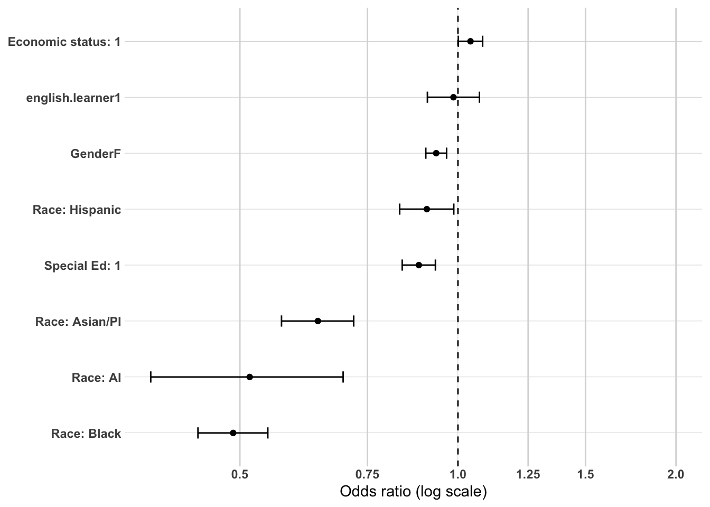
Model 2 - High School Characteristics and Local Labor Market
Adding high school characteristics (edr, avg.unemp.rate) produces negligible improvement in model fit (Nagelkerke R²=0.007, ΔAIC=-0.56). This confirms the bivariate finding that place-based characteristics of the high school attended have very limited independent associations with sustained regional employment at Year 5.
All demographic coefficients from Block 1 remain essentially unchanged in direction, magnitude, and significance, indicating that high school characteristics do not confound the demographic associations identified in Block 1.
EDR shows no significant association with sustained regional employment (OR=0.999, 95% CI 0.963-1.035, p=0.939). EDR 10 and EDR 9 graduates have virtually identical odds of sustained regional employment net of demographic characteristics and local unemployment rates. This is consistent with the bivariate finding that the two EDRs diverge on meaningful MN employment and no-MN-record rates — not on regional employment — and confirms that EDR membership is not an independent predictor of regional workforce attachment.
Average local unemployment rate shows a small but significant negative association (OR=0.987, 95% CI 0.975-0.999, p=0.033). Each one-unit increase in the average local unemployment rate is associated with approximately 1.3% lower odds of sustained regional employment, net of demographic characteristics and EDR. While statistically significant, the practical magnitude is modest. The direction is consistent with the bivariate finding that stronger local labor markets are associated with regional workforce attachment — graduates from communities with lower unemployment are modestly more likely to achieve sustained regional employment, likely reflecting both greater local opportunity and a regional orientation that coexists with relatively strong local economic conditions.
or_plot <-tidy(model2, conf.int =TRUE, exponentiate =TRUE) %>%filter(term !="(Intercept)") %>%mutate(# Make labels nicer (edit these replacements to match your exact factor labels)term =str_replace_all(term, c("RaceEthnicity"="Race: ","economic.status"="Economic status: ","SpecialEdStatus"="Special Ed: ","pseo.participant"="PSEO: ","cte.achievement"="CTE: ","MCA.M"="MCA Math","highest.cred.level"="Highest credential" )),# Put most important effects near the top (optional: tweak ordering later)term =fct_reorder(term, estimate) )ggplot(or_plot, aes(x = estimate, y = term)) +geom_vline(xintercept =1, linetype ="dashed") +geom_vline(xintercept =c(0.5, 0.75, 1.25, 1.5, 2),color ="grey85") +geom_point() +geom_errorbar(aes(xmin = conf.low, xmax = conf.high),orientation ="y",width =0.2 ) +scale_x_log10(breaks =c(0.5, 0.75, 1, 1.25, 1.5, 2),labels =c("0.5", "0.75", "1.0", "1.25", "1.5", "2.0") ) + theme_line +labs(x ="Odds ratio (log scale)",y =NULL )
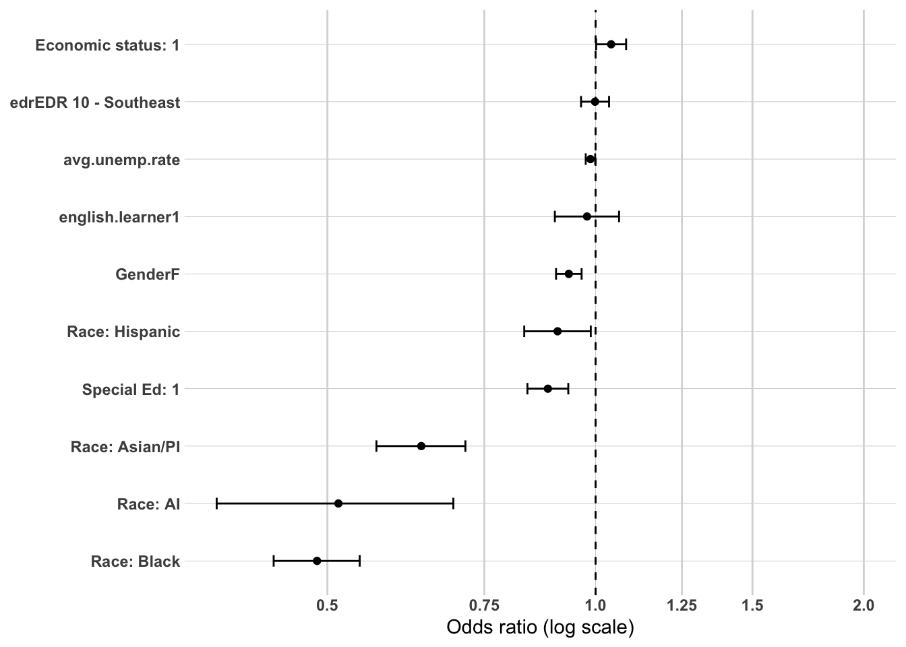
Model 3 - High School Accomplishments
Adding high school accomplishments produces the largest single improvement in model fit across all four blocks (Nagelkerke R²=0.038, ΔAIC=-1,445). High school academic and vocational preparation variables are collectively the strongest predictors of sustained regional employment at Year 5, confirming the bivariate findings.
Several important shifts occur in previously established coefficients when accomplishments are added. Gender becomes non-significant (OR=1.017, p=0.338) — the modest female disadvantage in regional employment identified in Blocks 1 and 2 is entirely explained by gender differences in academic and CTE preparation rather than representing an independent gender effect. Economic status shifts back to a negative association (OR=0.937, 95% CI 0.900-0.975) — the positive Block 1 association reflected economic status acting as a proxy for lower postsecondary orientation, which is now captured directly by the accomplishment variables. English learner status becomes significant (OR=0.879, 95% CI 0.807-0.956, p=0.003), suggesting its association with regional employment was previously suppressed by its correlation with academic achievement variables. Special education status strengthens considerably (OR=0.718, 95% CI 0.678-0.761) — its independent association with lower regional employment is more pronounced once academic preparation is controlled. Average local unemployment rate also strengthens (OR=0.962, 95% CI 0.950-0.974), confirming a more robust negative relationship with regional employment than Block 2 suggested.
Among the accomplishment variables, CTE achievement is the dominant predictor. CTE concentrators and completors have 62% higher odds of sustained regional employment than No CTE graduates (OR=1.616, 95% CI 1.548-1.687), and CTE participants have 40% higher odds (OR=1.400, 95% CI 1.340-1.464). Both are highly significant and represent the largest positive associations in the model. The dose-response gradient across CTE engagement levels — No CTE as reference, participants above, concentrators highest — is consistent with the bivariate findings and confirms CTE engagement as the defining predictor of the workforce-first pathway.
AP exam participation shows the strongest negative accomplishment association (OR=0.644, 95% CI 0.614-0.674). Graduates who took an AP exam have approximately 36% lower odds of sustained regional employment than non-AP takers, net of all other variables. This reflects the college completer pathway sorting mechanism — AP participation predicts out-of-region credential completion and subsequent out-of-region employment rather than regional workforce attachment.
MCA Reading score shows a significant negative association (OR=0.897, 95% CI 0.878-0.918). Each one standard deviation increase in MCA Reading score is associated with approximately 10% lower odds of sustained regional employment, consistent with higher academic achievement predicting postsecondary pathways that lead away from the region.
ACT participation shows a small but significant negative association (OR=0.936, 95% CI 0.898-0.975, p=0.001), directionally consistent with AP exam and MCA Reading — academic orientation and testing behavior are associated with reduced regional employment odds net of CTE engagement.
EDR 10 approaches but does not reach conventional significance (OR=1.036, p=0.063), suggesting a marginal tendency for EDR 10 graduates to have slightly higher regional employment odds than EDR 9 graduates once accomplishments are controlled — the reverse of the raw bivariate pattern and likely reflecting compositional differences between the two EDRs in academic and CTE preparation.
or_plot <-tidy(model3, conf.int =TRUE, exponentiate =TRUE) %>%filter(term !="(Intercept)") %>%mutate(# Make labels nicer (edit these replacements to match your exact factor labels)term =str_replace_all(term, c("RaceEthnicity"="Race: ","economic.status"="Economic status: ","SpecialEdStatus"="Special Ed: ","pseo.participant"="PSEO: ","cte.achievement"="CTE: ","MCA.M"="MCA Math","highest.cred.level"="Highest credential" )),# Put most important effects near the top (optional: tweak ordering later)term =fct_reorder(term, estimate) )ggplot(or_plot, aes(x = estimate, y = term)) +geom_vline(xintercept =1, linetype ="dashed") +geom_vline(xintercept =c(0.5, 0.75, 1.25, 1.5, 2),color ="grey85") +geom_point() +geom_errorbar(aes(xmin = conf.low, xmax = conf.high),orientation ="y",width =0.2 ) +scale_x_log10(breaks =c(0.5, 0.75, 1, 1.25, 1.5, 2),labels =c("0.5", "0.75", "1.0", "1.25", "1.5", "2.0") ) + theme_line +labs(x ="Odds ratio (log scale)",y =NULL )
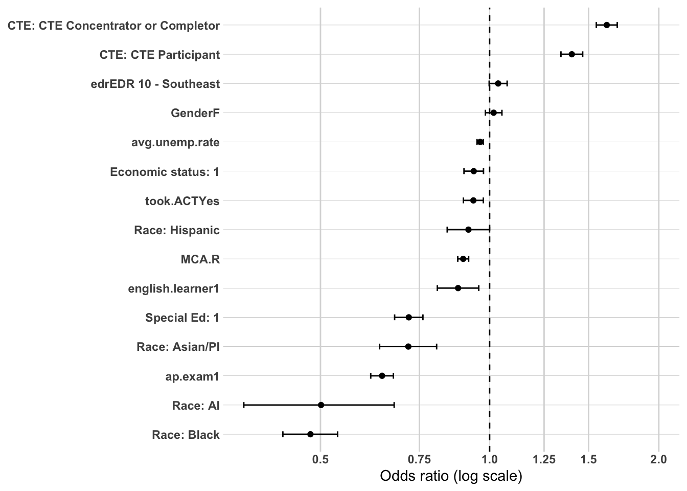
Model 4 - Postsecondary Pathway
Adding ps.pathway produces the largest single improvement in model fit across all four blocks (Nagelkerke R²=0.095, ΔAIC=-2,755). Postsecondary pathway is the dominant structural predictor of sustained regional employment at Year 5, confirming that where and at what level a graduate completes a credential is more consequential for regional workforce attachment than any combination of demographic or high school preparation variables.
Demographic and accomplishment coefficients from Block 3 remain directionally stable with modest changes in magnitude, indicating that ps.pathway is not acting as a confounder of earlier associations but rather as an independent structural predictor. Gender remains non-significant (OR=0.990, p=0.590). EDR 10 becomes significantly positive (OR=1.060, 95% CI 1.021-1.101, p=0.003) once postsecondary pathway is controlled — EDR 10 graduates have modestly higher odds of regional employment than EDR 9 graduates when pathway composition differences between the two EDRs are accounted for. CTE achievement coefficients attenuate modestly but remain large and highly significant — concentrators (OR=1.543) and participants (OR=1.344) — confirming that CTE engagement retains an independent association with regional employment even after postsecondary pathway is fully controlled. This means CTE engagement predicts regional employment both through its channeling effect toward sub-baccalaureate regional credential completion and through a direct independent mechanism among those who do not complete credentials.
The ps.pathway coefficients tell the clearest story in the model. Sub-baccalaureate regional completion is the strongest single predictor of sustained regional employment (OR=2.479, 95% CI 2.341-2.625) — graduates who complete sub-baccalaureate credentials in the region have nearly 2.5 times the odds of sustained regional employment compared to those who did not graduate postsecondary. Bachelor or higher regional completion is the second strongest positive predictor (OR=2.168, 95% CI 2.044-2.300) — four-year regional graduates also show substantially elevated odds of regional employment, though modestly below sub-baccalaureate regional completers, consistent with the bivariate finding that sub-baccalaureate regional completion produces the highest regional employment rates of any credential pathway.
Sub-baccalaureate MN completion shows a small positive association (OR=1.113, 95% CI 1.021-1.213, p=0.015), indicating modestly higher odds of regional employment than non-graduates — likely reflecting graduates who completed credentials in nearby Minnesota communities and subsequently returned to the region for employment.
Both bachelor or higher MN (OR=0.556, 95% CI 0.519-0.597) and bachelor or higher outside MN (OR=0.576, 95% CI 0.538-0.616) show substantial negative associations relative to non-graduates. Four-year completers outside the region — whether within Minnesota or out of state — have approximately 42-44% lower odds of sustained regional employment than those who did not graduate postsecondary, confirming that four-year out-of-region credential completion is the primary pathway away from regional workforce attachment.
Sub-baccalaureate outside MN completion also shows a negative association (OR=0.788, 95% CI 0.698-0.887), indicating that even sub-baccalaureate completion outside the state is associated with reduced regional employment odds relative to non-graduates.
The full model results confirm the three-pathway structure identified throughout the analysis. The college completer pathway bifurcates sharply by graduation location — regional completion at any credential level strongly predicts regional employment, while out-of-region completion predicts departure from the regional labor market. The workforce-first pathway is defined by CTE engagement, which retains large independent associations with regional employment even after controlling for postsecondary pathway. The disconnected pathway is characterized by the absence of both mechanisms — neither CTE engagement nor regional credential completion — and is most strongly associated with the demographic disadvantage variables that persist significantly throughout all four blocks.
or_plot <-tidy(model4, conf.int =TRUE, exponentiate =TRUE) %>%filter(term !="(Intercept)") %>%mutate(# Make labels nicer (edit these replacements to match your exact factor labels)term =str_replace_all(term, c("RaceEthnicity"="Race: ","economic.status"="Economic status: ","SpecialEdStatus"="Special Ed: ","pseo.participant"="PSEO: ","cte.achievement"="CTE: ","MCA.M"="MCA Math","highest.cred.level"="Highest credential" )),# Put most important effects near the top (optional: tweak ordering later)term =fct_reorder(term, estimate) )ggplot(or_plot, aes(x = estimate, y = term)) +geom_vline(xintercept =1, linetype ="dashed") +geom_vline(xintercept =c(0.5, 0.75, 1.25, 1.5, 2),color ="grey85") +geom_point() +geom_errorbar(aes(xmin = conf.low, xmax = conf.high),orientation ="y",width =0.2 ) +scale_x_log10(breaks =c(0.5, 0.75, 1, 1.25, 1.5, 2),labels =c("0.5", "0.75", "1.0", "1.25", "1.5", "2.0") ) + theme_line +labs(x ="Odds ratio (log scale)",y =NULL )
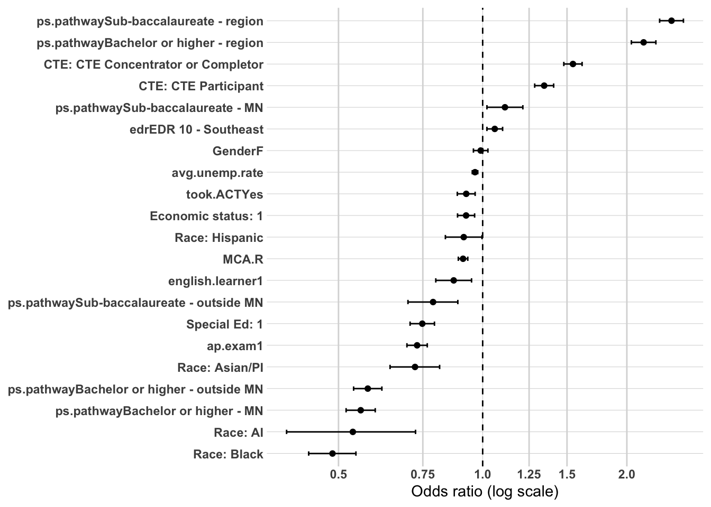
Summary of Multivariate Confirmation Analysis
OVERVIEW
The hierarchical logistic regression analysis was conducted on 63,795 Southeast Minnesota high school graduates with complete data on all model variables, excluding individuals still attending postsecondary or with post-2023 observation windows at Year 5. The model was built in four blocks — demographics, high school characteristics, high school accomplishments, and postsecondary pathway — to examine whether bivariate associations remain directionally consistent when key variables are considered simultaneously. The analysis is confirmatory rather than predictive, and findings are interpreted accordingly.
MODEL FIT PROGRESSION
The model gained explanatory power unevenly across the four blocks, revealing which variable groups carry the most analytical weight.
Block 1 (Demographics alone) explained very little variance (Nagelkerke R²=0.007, AIC=81,791). Block 2 (adding high school characteristics) produced essentially no improvement (ΔAIC=-0.56), confirming that place-based factors have negligible independent associations with regional employment outcomes. Block 3 (adding high school accomplishments) produced the first substantial improvement (Nagelkerke R²=0.038, ΔAIC=-1,445), establishing that academic and vocational preparation in high school are the most important pre-college predictors. Block 4 (adding postsecondary pathway) produced the largest single improvement (Nagelkerke R²=0.095, ΔAIC=-2,755), confirming that where and at what level a graduate completes a credential is the dominant structural predictor of regional workforce attachment.
WHAT THE MODEL TELLS US
The full four-block model tells a coherent and consistent story organized around three workforce pathways identified throughout the bivariate analysis.
The workforce-first pathway is most powerfully defined by CTE engagement. CTE concentrators and completors retain 54% higher odds of sustained regional employment (OR=1.543) and CTE participants retain 34% higher odds (OR=1.344) relative to No CTE graduates, even after controlling for demographics, local labor market conditions, academic achievement, and postsecondary pathway simultaneously. This means CTE engagement predicts regional employment through two independent mechanisms — it directly increases regional workforce attachment among those who do not complete postsecondary credentials, and it channels credential completers toward sub-baccalaureate regional pathways that themselves strongly predict regional employment. No other high school preparation variable approaches the magnitude or stability of CTE engagement across all four model blocks.
The college completer pathway bifurcates sharply by graduation location. Among credential completers, regional graduation at any credential level is strongly associated with regional employment — sub-baccalaureate regional completion (OR=2.479) and bachelor or higher regional completion (OR=2.168) are the two strongest positive predictors in the entire model. Out-of-region completion — whether within Minnesota or outside the state — is associated with substantially reduced regional employment odds (OR=0.556 and OR=0.576 for bachelor or higher pathways). Graduation location is the critical hinge of the college completer pathway, exactly as the bivariate and postsecondary analyses predicted. Sub-baccalaureate regional completion edges out bachelor or higher regional completion as the strongest credential pathway predictor, confirming the non-linear credential level finding from the postsecondary analysis — community and technical college completion in the region is the most direct credential route to regional workforce attachment.
The disconnected pathway is defined by the simultaneous absence of both mechanisms. Graduates with no CTE engagement and no postsecondary credential are the reference condition for the model’s lowest predicted probabilities of regional employment. The demographic variables that remain significant throughout all four blocks — Black race (OR=0.486), American Indian race (OR=0.536), Asian/PI race (OR=0.722), Hispanic ethnicity (OR=0.913), economic disadvantage (OR=0.923), special education status (OR=0.748), and english learner status (OR=0.870) — all show persistent negative associations with regional employment that are not explained by high school preparation or postsecondary pathway. These represent structural barriers that operate independently of the pathway mechanisms and are most concentrated among graduates who fall into the disconnected pathway.
THE THREE FINDINGS THAT MATTER MOST
First, CTE engagement is the single most powerful and durable predictor of regional workforce attachment in Southeast Minnesota. Its association with regional employment survives full multivariate control and operates through both direct and mediated mechanisms. The dose-response gradient — No CTE as baseline, participants above, concentrators highest — is consistent across all model blocks.
Second, graduation location is the critical hinge of the college completer pathway. Regional credential completion — at any level — substantially increases the odds of regional employment, while out-of-region completion substantially decreases them. The sub-baccalaureate versus baccalaureate distinction matters, but it matters less than the regional versus non-regional distinction. A four-year graduate who completes regionally has nearly as strong a regional employment advantage as a two-year graduate who completes regionally, and both far outperform any out-of-region credential pathway.
Third, demographic disadvantage persists throughout the model. Economic disadvantage, special education status, english learner status, and racial and ethnic minority status all show independent negative associations with regional employment that are not explained by high school preparation or postsecondary pathway. This means the structural barriers facing these graduates are not simply a function of differential access to CTE or postsecondary credentials — they operate through additional mechanisms not captured in the model, and represent the most important equity consideration in the narrative synthesis.
LIMITATIONS
The model is estimated on the subset of graduates with non-missing MCA.R scores, which introduces selection effects — MCA takers are systematically different from non-takers in ways that could affect the generalizability of coefficients, particularly for CTE and demographic variables. The Hosmer-Lemeshow test indicates some remaining lack of fit at Block 4 (p=0.034), suggesting the model does not perfectly capture all sources of variation in regional employment outcomes. As noted throughout, all associations are descriptive rather than causal — the model identifies which characteristics co-occur with regional employment, not which characteristics produce it.
Prep post-secondary variables
It’s cystal clear that post-secondary pathways is significantly related to workforce participation outcomes. So it’s important that we tease out which independent variables are associated with the various post-secondary pathway outcomes. The following analysis will explore the relationships to three different, binary dependent variables;
ps.grad: Yes or no, entire dataset
highest.cred.level: sub-baccalaureate vs. bacherlor or higher, subset post-secondary completers only
ps.grad.location: regional vs. non-regional, subset post-secondary completers only.
We are going to stick with the same independent variables blocks as before;
Model 1: Demographics
Model 2: Demographics + high school characteristics
Model 3: Demographics + high school characteristics + high school accomplishments
interpretations will follow the same logic as the previous modeling as well.
The demographics-only model explains a meaningful proportion of variance in postsecondary credential completion (Nagelkerke R²=0.180, AIC=110,506), substantially more than the comparable block in the workforce outcome model. This reflects the strong demographic stratification in postsecondary access documented in the bivariate analysis — who completes a credential is more strongly predicted by demographic characteristics than where graduates end up in the labor market.
Gender shows the largest positive association of any demographic variable (OR=1.723, 95% CI 1.674-1.772). Females have 72% higher odds of completing a postsecondary credential than males net of other demographic characteristics. This is the strongest gender effect in the entire analysis and confirms that the female credential completion advantage is a robust independent association not explained by racial, ethnic, or economic composition differences.
Race and ethnicity shows the widest range of associations of any variable group. American Indian graduates show the largest negative association (OR=0.194, 95% CI 0.149-0.250) — approximately one-fifth the odds of credential completion compared to White graduates. This is an extremely large effect and should be interpreted with appropriate caution given the small group size. Hispanic graduates show a strong negative association (OR=0.598, 95% CI 0.554-0.646) and Black graduates show a moderate negative association (OR=0.735, 95% CI 0.674-0.800). Asian/PI graduates are the only minority group showing higher odds of completion than White graduates (OR=1.214, 95% CI 1.111-1.327), consistent with the bivariate finding that Asian/PI graduates complete credentials at rates comparable to or above White graduates.
Economic status shows the second largest association in the block (OR=0.343, 95% CI 0.332-0.355). Low-income graduates have approximately 66% lower odds of credential completion than non-low-income graduates net of other demographic characteristics. This is one of the largest economic status effects in the entire analysis and confirms that economic disadvantage is a powerful and independent barrier to postsecondary credential completion in Southeast Minnesota.
Special education status shows the largest negative association in the block (OR=0.228, 95% CI 0.216-0.241) — special education graduates have approximately 77% lower odds of credential completion than non-special education graduates. This is consistent with the bivariate finding that special education status is the strongest demographic barrier to credential completion, and the multivariate estimate confirms this association is independent of economic status, race, and other demographic characteristics.
English learner status shows a modest but significant negative association (OR=0.889, 95% CI 0.825-0.957, p=0.002), indicating approximately 11% lower odds of credential completion. This is a relatively small effect compared to economic status and special education status, suggesting that language minority status introduces a modest independent barrier to completion beyond what is captured by other demographic variables.
or_plot <-tidy(model_ps_grad_1, conf.int =TRUE, exponentiate =TRUE) %>%filter(term !="(Intercept)") %>%mutate(# Make labels nicer (edit these replacements to match your exact factor labels)term =str_replace_all(term, c("RaceEthnicity"="Race: ","economic.status"="Economic status: ","SpecialEdStatus"="Special Ed: ","pseo.participant"="PSEO: ","cte.achievement"="CTE: ","MCA.M"="MCA Math","highest.cred.level"="Highest credential" )),# Put most important effects near the top (optional: tweak ordering later)term =fct_reorder(term, estimate) )ggplot(or_plot, aes(x = estimate, y = term)) +geom_vline(xintercept =1, linetype ="dashed") +geom_vline(xintercept =c(0.5, 0.75, 1.25, 1.5, 2),color ="grey85") +geom_point() +geom_errorbar(aes(xmin = conf.low, xmax = conf.high),orientation ="y",width =0.2 ) +scale_x_log10(breaks =c(0.5, 0.75, 1, 1.25, 1.5, 2),labels =c("0.5", "0.75", "1.0", "1.25", "1.5", "2.0") ) + theme_line +labs(x ="Odds ratio (log scale)",y =NULL )
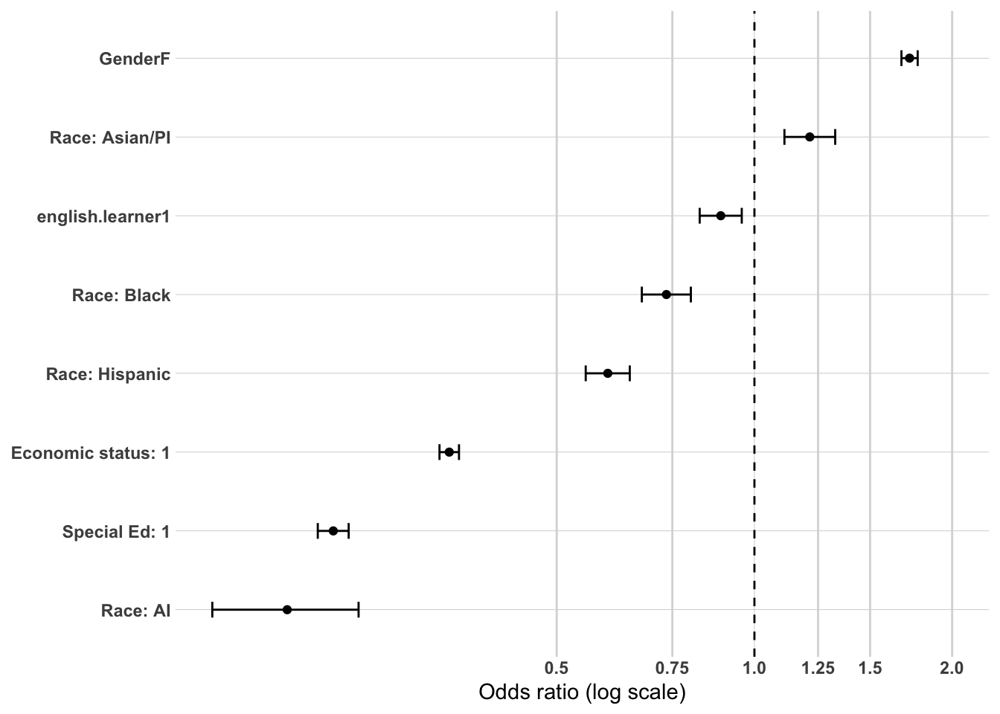
Model 2 - High School Characteristics and Local Labor Market
Adding high school characteristics produces negligible improvement in model fit (Nagelkerke R²=0.181, ΔAIC=-1.4). Place-based factors have essentially no independent association with postsecondary credential completion once demographic characteristics are controlled, consistent with the bivariate finding that high school characteristics explain very little variance in postsecondary outcomes.
All demographic coefficients from Block 1 remain essentially unchanged in direction, magnitude, and significance, confirming that high school characteristics do not confound the demographic associations identified in Block 1.
EDR shows no significant association with credential completion (OR=0.974, 95% CI 0.944-1.005, p=0.099). Whether a graduate attended high school in EDR 9 or EDR 10 has no meaningful independent bearing on whether they complete a postsecondary credential once demographic characteristics are controlled. This is consistent with the bivariate finding that credential completion rates were essentially identical across the two EDRs (53.8% vs. 54.3%).
Average local unemployment rate shows no significant association with credential completion (OR=1.008, 95% CI 0.997-1.018, p=0.143). This contrasts with the workforce outcome model where unemployment rate showed a modest negative association with regional employment. The absence of an effect here suggests that local labor market conditions do not independently influence whether graduates attempt and complete postsecondary credentials — the bivariate finding that higher unemployment was associated with higher completion rates does not survive demographic controls.
or_plot <-tidy(model_ps_grad_2, conf.int =TRUE, exponentiate =TRUE) %>%filter(term !="(Intercept)") %>%mutate(# Make labels nicer (edit these replacements to match your exact factor labels)term =str_replace_all(term, c("RaceEthnicity"="Race: ","economic.status"="Economic status: ","SpecialEdStatus"="Special Ed: ","pseo.participant"="PSEO: ","cte.achievement"="CTE: ","MCA.M"="MCA Math","highest.cred.level"="Highest credential" )),# Put most important effects near the top (optional: tweak ordering later)term =fct_reorder(term, estimate) )ggplot(or_plot, aes(x = estimate, y = term)) +geom_vline(xintercept =1, linetype ="dashed") +geom_vline(xintercept =c(0.5, 0.75, 1.25, 1.5, 2),color ="grey85") +geom_point() +geom_errorbar(aes(xmin = conf.low, xmax = conf.high),orientation ="y",width =0.2 ) +scale_x_log10(breaks =c(0.5, 0.75, 1, 1.25, 1.5, 2),labels =c("0.5", "0.75", "1.0", "1.25", "1.5", "2.0") ) + theme_line +labs(x ="Odds ratio (log scale)",y =NULL )
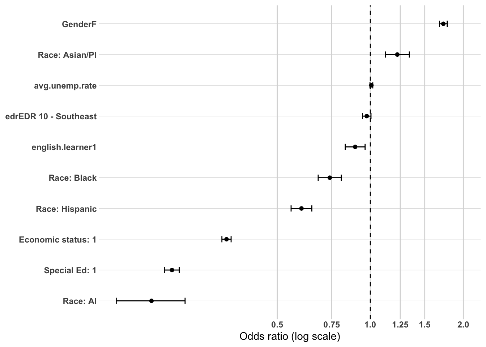
Model 3 - High School Accomplishments
Adding high school accomplishments produces a very large improvement in model fit (Nagelkerke R²=0.301, ΔAIC=-9,795), confirming that high school academic and vocational preparation variables are the dominant predictors of postsecondary credential completion. Several important coefficient shifts occur relative to Block 2.
English learner status reverses direction and becomes significantly positive (OR=1.258, 95% CI 1.162-1.362, p<0.001). Once academic achievement and orientation variables are controlled, english learner graduates have approximately 26% higher odds of credential completion than non-english learner graduates. This suggests that in earlier blocks english learner status was acting as a proxy for lower academic achievement — once that is directly controlled, a positive postsecondary orientation among english learner graduates becomes visible. Asian/PI becomes non-significant (OR=1.022, p=0.660) — the Block 1 completion advantage for Asian/PI graduates is entirely explained by their higher academic achievement and testing rates rather than representing an independent racial or ethnic effect. Average local unemployment rate becomes strongly positive and significant (OR=1.140, 95% CI 1.127-1.154, p<0.001), consistent with the interpretation that weak local labor markets increase the relative attractiveness of postsecondary investment as an alternative to limited immediate employment opportunities — an effect that was masked by demographic confounding in earlier blocks. Economic status and special education status both attenuate substantially but remain large and highly significant, confirming that economic and institutional barriers to completion operate independently of academic preparation.
Among the accomplishment variables, ACT participation is the dominant predictor of credential completion (OR=3.242, 95% CI 3.122-3.367). Graduates who took the ACT have more than three times the odds of completing a credential compared to non-ACT takers, net of all other variables. This is the largest single odds ratio in the ps.grad model and confirms that ACT participation functions as a near-perfect signal of postsecondary intent and follow-through in Southeast Minnesota.
AP exam participation shows the second strongest positive association (OR=2.212, 95% CI 2.125-2.303). AP exam takers have more than double the odds of credential completion compared to non-takers, consistent with AP participation selecting for the most academically prepared and postsecondary-oriented graduates.
MCA Reading score shows a strong positive association (OR=1.292, 95% CI 1.265-1.320). Each one standard deviation increase in MCA Reading score is associated with approximately 29% higher odds of credential completion, confirming that academic achievement is a robust independent predictor of postsecondary success net of ACT and AP participation.
CTE achievement shows significant negative associations, confirming the inverse relationship between CTE engagement and credential completion identified throughout the bivariate analysis. CTE concentrators and completors have approximately 17% lower odds of credential completion than No CTE graduates (OR=0.826, 95% CI 0.795-0.858), and CTE participants have approximately 11% lower odds (OR=0.888, 95% CI 0.854-0.924). While statistically significant, these negative associations are modest in magnitude compared to the academic orientation variables — CTE engagement reduces credential completion odds, but the effect is substantially smaller than the positive effects of ACT participation and AP exam taking. This confirms that the academic orientation versus CTE engagement divide operates clearly within the credential completion decision, but that CTE engagement is not an insurmountable barrier to postsecondary completion.
or_plot <-tidy(model_ps_grad_3, conf.int =TRUE, exponentiate =TRUE) %>%filter(term !="(Intercept)") %>%mutate(# Make labels nicer (edit these replacements to match your exact factor labels)term =str_replace_all(term, c("RaceEthnicity"="Race: ","economic.status"="Economic status: ","SpecialEdStatus"="Special Ed: ","pseo.participant"="PSEO: ","cte.achievement"="CTE: ","MCA.M"="MCA Math","highest.cred.level"="Highest credential" )),# Put most important effects near the top (optional: tweak ordering later)term =fct_reorder(term, estimate) )ggplot(or_plot, aes(x = estimate, y = term)) +geom_vline(xintercept =1, linetype ="dashed") +geom_vline(xintercept =c(0.5, 0.75, 1.25, 1.5, 2),color ="grey85") +geom_point() +geom_errorbar(aes(xmin = conf.low, xmax = conf.high),orientation ="y",width =0.2 ) +scale_x_log10(breaks =c(0.5, 0.75, 1, 1.25, 1.5, 2),labels =c("0.5", "0.75", "1.0", "1.25", "1.5", "2.0") ) + theme_line +labs(x ="Odds ratio (log scale)",y =NULL )
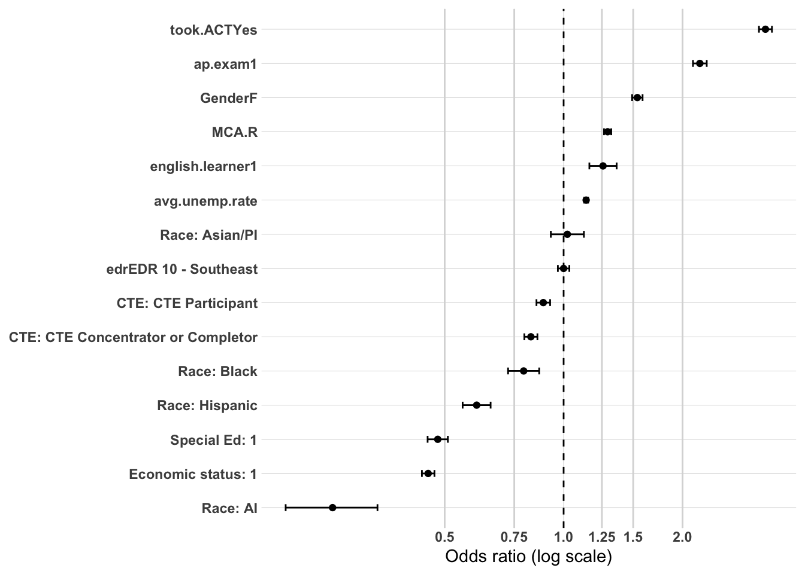
Summary of Multivariate Confirmation Analysis
OVERVIEW
The hierarchical logistic regression analysis was conducted on 89,161 Southeast Minnesota high school graduates with complete data on all model variables, excluding individuals currently attending postsecondary at the time of observation. The model was built in three blocks — demographics, high school characteristics, and high school accomplishments — to examine whether bivariate associations with credential completion remain directionally consistent when key variables are considered simultaneously.
MODEL FIT PROGRESSION
Block 1 (Demographics alone) explained a substantial proportion of variance in credential completion (Nagelkerke R²=0.180, AIC=110,506), considerably more than the comparable block in the workforce outcome model. This reflects the strong demographic stratification in postsecondary access — who completes a credential is more strongly predicted by background characteristics than where graduates end up in the labor market. Block 2 (adding high school characteristics) produced negligible improvement (ΔAIC=-1.4), confirming that place-based factors have no meaningful independent association with credential completion once demographics are controlled. Block 3 (adding high school accomplishments) produced a very large improvement (Nagelkerke R²=0.301, ΔAIC=-9,795), establishing that academic and vocational preparation in high school are the dominant predictors of credential completion.
WHAT THE MODEL TELLS US
The credential completion model tells a clear and consistent story about who succeeds in postsecondary education in Southeast Minnesota, organized around two competing forces — academic orientation, which strongly predicts completion, and structural disadvantage, which persistently reduces it.
Academic orientation is the most powerful predictor of credential completion. ACT participation (OR=3.242) and AP exam participation (OR=2.212) are the two strongest positive predictors in the model — graduates who took the ACT have more than three times the odds of completing a credential, and AP exam takers have more than double the odds, net of all other variables including demographics and MCA scores. MCA Reading score adds an independent positive association (OR=1.292 per standard deviation), confirming that academic achievement predicts completion above and beyond testing behavior alone. Together these three variables capture the academic orientation pathway through which high school preparation translates into postsecondary success.
CTE engagement is negatively associated with credential completion but modestly so. CTE concentrators and completors have approximately 17% lower odds of completion than No CTE graduates (OR=0.826), and CTE participants have approximately 11% lower odds (OR=0.888). These associations are statistically significant but small in magnitude relative to the academic orientation variables. CTE engagement reduces credential completion odds, but the effect reflects a deliberate orientation toward workforce entry rather than an inability to succeed in postsecondary — graduates who concentrate in CTE are choosing a different pathway, not failing at the postsecondary one.
Structural disadvantage persists throughout all three blocks. Economic disadvantage (OR=0.454) and special education status (OR=0.480) are the largest persistent negative associations in the final model — low-income and special education graduates have approximately 55% and 52% lower odds of credential completion respectively, net of academic preparation and all other variables. These effects attenuate from Block 1 to Block 3 but remain very large, confirming that economic and institutional barriers to completion operate independently of academic preparation. American Indian (OR=0.260) and Hispanic (OR=0.602) graduates show large persistent negative associations, while Black graduates show a moderate negative association (OR=0.792). These racial and ethnic disparities are not fully explained by differential academic preparation or economic status — independent structural barriers remain.
Gender shows a large and stable positive association for females throughout all three blocks (OR=1.537 at Block 3), confirming that the female credential completion advantage is robust and independent of academic preparation, economic status, and all other variables in the model.
Two findings that emerge only at Block 3 are analytically important. English learner status reverses from negative to positive (OR=1.258) once academic achievement is controlled, revealing a positive postsecondary orientation among english learner graduates that was masked by their lower average academic achievement in earlier blocks. Average local unemployment rate becomes strongly positive (OR=1.140), confirming that graduates from communities with weaker labor markets are more likely to complete credentials — consistent with postsecondary investment being more attractive when immediate employment alternatives are limited.
THE TWO FINDINGS THAT MATTER MOST
First, academic orientation in high school is the single most powerful predictor of postsecondary credential completion. ACT participation alone nearly triples the odds of completion, and the combination of ACT participation, AP exam taking, and high MCA Reading scores identifies the graduates most likely to successfully navigate the postsecondary pathway. These variables are not simply measuring ability — they are measuring the orientation toward postsecondary education that develops during high school and translates directly into completion.
Second, structural disadvantage is large, persistent, and not fully explained by academic preparation. Economic disadvantage and special education status retain the largest negative associations in the fully adjusted model, and racial and ethnic disparities persist after controlling for academic achievement, economic status, and all other variables. This means that closing the credential completion gap in Southeast Minnesota requires addressing structural barriers that operate independently of academic preparation — financial access, institutional support, and systemic inequities that academic achievement variables alone cannot capture.
LIMITATIONS
The Hosmer-Lemeshow test indicates substantial lack of fit at Block 3 (p<0.001), suggesting the model does not fully capture the complexity of credential completion patterns. This is likely a function of the large sample size amplifying small systematic misfits rather than a fundamental model misspecification. As noted throughout, all associations are descriptive rather than causal.
The demographics-only model explains a modest proportion of variance in credential level among completers (Nagelkerke R²=0.084, AIC=54,294). This is lower than the comparable block in the ps.grad model, consistent with the bivariate finding that demographic stratification is stronger in credential completion than in credential level conditional on completion.
The intercept OR=2.437 represents the baseline odds of bachelor or higher completion for the reference group (non-disadvantaged White males), translating to approximately 71% predicted probability of reaching the baccalaureate level among completers — consistent with White non-disadvantaged male completers being above the overall 68.2% baccalaureate rate observed in the bivariate analysis.
Gender shows a significant positive association for females (OR=1.372, 95% CI 1.317-1.430). Among credential completers, females have approximately 37% higher odds of reaching the baccalaureate level than males. This is consistent with the bivariate finding that males are disproportionately concentrated in sub-baccalaureate completion — particularly at public 2-year institutions — while females show higher rates of four-year credential attainment.
Race and ethnicity shows a striking reversal relative to the ps.grad model. Asian/PI graduates show the largest positive association (OR=1.989, 95% CI 1.729-2.295) — among completers, Asian/PI graduates have nearly double the odds of reaching the baccalaureate level compared to White graduates. Black graduates also show a significant positive association (OR=1.566, 95% CI 1.346-1.824). These reversals reflect a selection effect — the Asian/PI and Black graduates who successfully complete credentials are a more academically oriented subset of their respective populations, and within this selected group they are more likely to pursue four-year credentials. Hispanic graduates show a modest negative association (OR=0.838, 95% CI 0.735-0.955), consistent with the bivariate finding that Hispanic completers are more concentrated in sub-baccalaureate pathways. American Indian graduates show a non-significant negative association (OR=0.685, p=0.119) — the small number of American Indian completers produces an unstable estimate that should be interpreted with caution.
Economic status shows a strong negative association (OR=0.426, 95% CI 0.404-0.450). Among completers, low-income graduates have approximately 57% lower odds of reaching the baccalaureate level than non-low-income graduates. This is one of the largest economic status effects in the entire analysis and confirms that even among graduates who successfully complete credentials, economic disadvantage substantially constrains access to four-year pathways.
Special education status shows the largest negative association in the block (OR=0.229, 95% CI 0.207-0.254) — special education completers have approximately 77% lower odds of reaching the baccalaureate level. This is consistent with the bivariate finding that special education completers are overwhelmingly concentrated in sub-baccalaureate credentials, and the magnitude here confirms this is a very strong and independent association.
English learner status shows a strong negative association (OR=0.511, 95% CI 0.448-0.583). Among completers, english learner graduates have approximately 49% lower odds of reaching the baccalaureate level than non-english learner graduates. This contrasts sharply with the positive english learner association seen in the ps.grad model at Block 3, suggesting that while english learner graduates who enter the postsecondary system are oriented toward completion, they are channeled toward sub-baccalaureate rather than baccalaureate credentials — likely reflecting access constraints and concentration at public 2-year institutions.
Hosmer and Lemeshow goodness of fit (GOF) test
data: model_highest_cred_level_1$y, fitted(model_highest_cred_level_1)
X-squared = 9.6783, df = 3, p-value = 0.02151
or_plot <-tidy(model_highest_cred_level_1, conf.int =TRUE, exponentiate =TRUE) %>%filter(term !="(Intercept)") %>%mutate(# Make labels nicer (edit these replacements to match your exact factor labels)term =str_replace_all(term, c("RaceEthnicity"="Race: ","economic.status"="Economic status: ","SpecialEdStatus"="Special Ed: ","pseo.participant"="PSEO: ","cte.achievement"="CTE: ","MCA.M"="MCA Math","highest.cred.level"="Highest credential" )),# Put most important effects near the top (optional: tweak ordering later)term =fct_reorder(term, estimate) )ggplot(or_plot, aes(x = estimate, y = term)) +geom_vline(xintercept =1, linetype ="dashed") +geom_vline(xintercept =c(0.5, 0.75, 1.25, 1.5, 2),color ="grey85") +geom_point() +geom_errorbar(aes(xmin = conf.low, xmax = conf.high),orientation ="y",width =0.2 ) +scale_x_log10(breaks =c(0.5, 0.75, 1, 1.25, 1.5, 2),labels =c("0.5", "0.75", "1.0", "1.25", "1.5", "2.0") ) + theme_line +labs(x ="Odds ratio (log scale)",y =NULL )
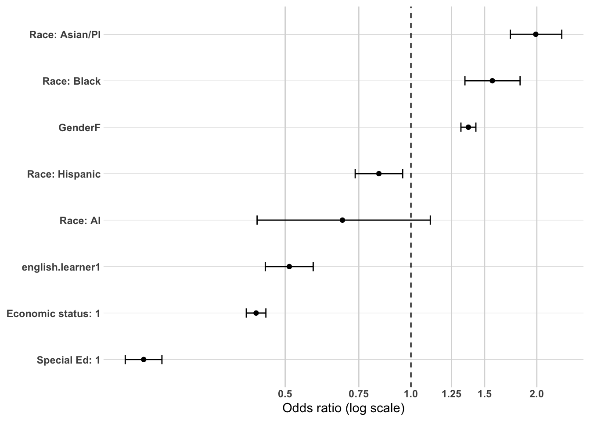
Model 2 - High School Characteristics and Local Labor Market
Adding high school characteristics produces a modest but meaningful improvement in model fit (Nagelkerke R²=0.086, ΔAIC=-54), driven primarily by EDR. This contrasts with the ps.grad model where Block 2 added essentially nothing — place-based factors have more bearing on what level of credential a completer earns than on whether they complete at all.
All demographic coefficients from Block 1 remain essentially unchanged in direction, magnitude, and significance, confirming that high school characteristics do not confound the demographic associations identified in Block 1.
EDR shows a significant and meaningful positive association for EDR 10 graduates (OR=1.186, 95% CI 1.134-1.240, p<0.001). Among credential completers, EDR 10 graduates have approximately 19% higher odds of reaching the baccalaureate level than EDR 9 graduates, net of demographic characteristics. This is the first model in the analysis where EDR shows a substantively meaningful independent association, and it is in a direction not anticipated by the bivariate findings. EDR 9 graduates who complete credentials are more concentrated in sub-baccalaureate pathways — consistent with the postsecondary bivariate finding that EDR 9 completers showed higher sub-baccalaureate MN completion rates — while EDR 10 completers reach the baccalaureate level at higher rates. This EDR difference in credential level is likely part of the mechanism behind the EDR 9 advantage in meaningful MN employment seen in Stage 3, as EDR 9 sub-baccalaureate completers are more likely to find employment within Minnesota while EDR 10 baccalaureate completers are more likely to leave the state.
Average local unemployment rate shows no significant association with credential level among completers (OR=0.993, p=0.345). Local labor market conditions shape whether graduates complete credentials but not what level of credential they attain conditional on completion — once a graduate is in the postsecondary system, the strength of the local labor market does not meaningfully influence whether they pursue a two-year or four-year credential.
Hosmer and Lemeshow goodness of fit (GOF) test
data: model_highest_cred_level_2$y, fitted(model_highest_cred_level_2)
X-squared = 37.536, df = 8, p-value = 9.168e-06
or_plot <-tidy(model_highest_cred_level_2, conf.int =TRUE, exponentiate =TRUE) %>%filter(term !="(Intercept)") %>%mutate(# Make labels nicer (edit these replacements to match your exact factor labels)term =str_replace_all(term, c("RaceEthnicity"="Race: ","economic.status"="Economic status: ","SpecialEdStatus"="Special Ed: ","pseo.participant"="PSEO: ","cte.achievement"="CTE: ","MCA.M"="MCA Math","highest.cred.level"="Highest credential" )),# Put most important effects near the top (optional: tweak ordering later)term =fct_reorder(term, estimate) )ggplot(or_plot, aes(x = estimate, y = term)) +geom_vline(xintercept =1, linetype ="dashed") +geom_vline(xintercept =c(0.5, 0.75, 1.25, 1.5, 2),color ="grey85") +geom_point() +geom_errorbar(aes(xmin = conf.low, xmax = conf.high),orientation ="y",width =0.2 ) +scale_x_log10(breaks =c(0.5, 0.75, 1, 1.25, 1.5, 2),labels =c("0.5", "0.75", "1.0", "1.25", "1.5", "2.0") ) + theme_line +labs(x ="Odds ratio (log scale)",y =NULL )
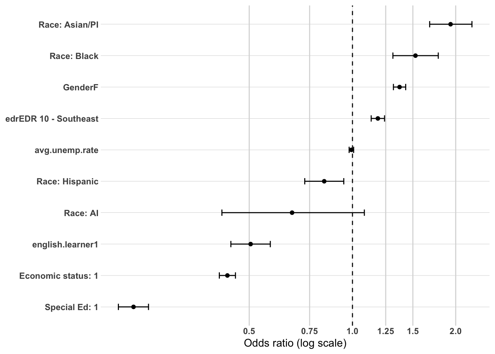
Model 3 - High School Accomplishments
Adding high school accomplishments produces a very large improvement in model fit (Nagelkerke R²=0.285, ΔAIC=-7,553), confirming that high school academic and vocational preparation variables are the dominant predictors of credential level among completers. The accomplishment variables here produce the sharpest academic orientation versus CTE engagement divide of any model in the analysis.
English learner status becomes marginally non-significant (OR=0.872, p=0.072) once accomplishments are controlled — the Block 1 and 2 negative association is largely explained by lower average academic achievement among english learner completers rather than an independent language barrier to four-year credential attainment. Average local unemployment rate reverses to a strong positive association (OR=1.133, 95% CI 1.114-1.153, p<0.001), consistent with the ps.grad Block 3 finding — graduates from weaker labor markets who complete credentials are more likely to pursue higher credential levels, likely reflecting greater motivation to invest fully in postsecondary given limited local alternatives. EDR 10 retains a significant positive association (OR=1.121, 95% CI 1.067-1.178, p<0.001), indicating that even after controlling for academic preparation, EDR 10 completers are more likely to reach the baccalaureate level than EDR 9 completers. Economic status and special education status both attenuate substantially but remain large and highly significant, confirming that economic and institutional barriers to four-year attainment operate independently of academic preparation.
ACT participation is the dominant predictor of baccalaureate attainment among completers (OR=4.383, 95% CI 4.105-4.682). Among credential completers, ACT takers have more than four times the odds of reaching the baccalaureate level compared to non-ACT takers — the largest single odds ratio in any model in the analysis. This confirms that ACT participation functions not only as a signal of postsecondary intent at the completion stage but as the primary sorting mechanism between sub-baccalaureate and baccalaureate credential attainment among those who complete.
AP exam participation shows the second strongest positive association (OR=2.821, 95% CI 2.666-2.986). Among completers, AP exam takers have nearly three times the odds of reaching the baccalaureate level compared to non-takers, confirming that advanced academic coursework in high school is a powerful predictor of four-year credential attainment independent of ACT participation and MCA scores.
MCA Reading score shows a strong positive association (OR=1.646, 95% CI 1.590-1.703). Each one standard deviation increase in MCA Reading score is associated with approximately 65% higher odds of reaching the baccalaureate level among completers — the largest MCA Reading effect of any model in the analysis and substantially larger than the comparable coefficient in the ps.grad model.
CTE achievement shows the largest negative associations of any model in the analysis. CTE concentrators and completors have approximately 47% lower odds of reaching the baccalaureate level than No CTE graduates (OR=0.529, 95% CI 0.499-0.560), and CTE participants have approximately 28% lower odds (OR=0.724, 95% CI 0.682-0.768). Both are highly significant and substantially larger than the comparable CTE coefficients in the ps.grad model. The dose-response gradient is steep and consistent — the more deeply a completer engaged with CTE in high school, the more likely they are to stop at the sub-baccalaureate level. This is the clearest multivariate confirmation that CTE engagement channels completers toward sub-baccalaureate credentials and, through that mechanism, toward regional workforce attachment.
Gender retains a significant positive association for females (OR=1.148, 95% CI 1.097-1.202) even after controlling for accomplishments, indicating that females are more likely to reach the baccalaureate level than males with equivalent academic preparation and CTE engagement — a modest but independent gender effect on credential level that is not fully explained by high school preparation differences.
Hosmer and Lemeshow goodness of fit (GOF) test
data: model_highest_cred_level_3$y, fitted(model_highest_cred_level_3)
X-squared = 17.254, df = 8, p-value = 0.02757
or_plot <-tidy(model_highest_cred_level_3, conf.int =TRUE, exponentiate =TRUE) %>%filter(term !="(Intercept)") %>%mutate(# Make labels nicer (edit these replacements to match your exact factor labels)term =str_replace_all(term, c("RaceEthnicity"="Race: ","economic.status"="Economic status: ","SpecialEdStatus"="Special Ed: ","pseo.participant"="PSEO: ","cte.achievement"="CTE: ","MCA.M"="MCA Math","highest.cred.level"="Highest credential" )),# Put most important effects near the top (optional: tweak ordering later)term =fct_reorder(term, estimate) )ggplot(or_plot, aes(x = estimate, y = term)) +geom_vline(xintercept =1, linetype ="dashed") +geom_vline(xintercept =c(0.5, 0.75, 1.25, 1.5, 2),color ="grey85") +geom_point() +geom_errorbar(aes(xmin = conf.low, xmax = conf.high),orientation ="y",width =0.2 ) +scale_x_log10(breaks =c(0.5, 0.75, 1, 1.25, 1.5, 2),labels =c("0.5", "0.75", "1.0", "1.25", "1.5", "2.0") ) + theme_line +labs(x ="Odds ratio (log scale)",y =NULL )
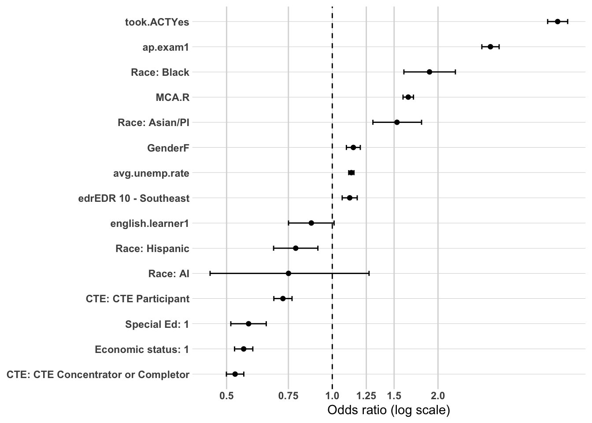
Summary of Multivariate Confirmation Analysis
OVERVIEW
The hierarchical logistic regression analysis was conducted on 46,438 Southeast Minnesota high school graduates who completed a postsecondary credential, with the outcome coded as 1 = bachelor or higher and 0 = less than bachelor. The model was built in three blocks — demographics, high school characteristics, and high school accomplishments — to examine whether bivariate associations with credential level remain directionally consistent when key variables are considered simultaneously. Because this analysis is restricted to credential completers, findings reflect a selected population and should be interpreted accordingly.
MODEL FIT PROGRESSION
Block 1 (Demographics alone) explained a modest proportion of variance in credential level (Nagelkerke R²=0.084, AIC=54,294). Block 2 (adding high school characteristics) produced a meaningful improvement relative to the comparable blocks in the ps.grad and workforce outcome models (ΔAIC=-54), driven primarily by EDR — place-based factors matter more for credential level than for credential completion or regional employment. Block 3 (adding high school accomplishments) produced a very large improvement (Nagelkerke R²=0.285, ΔAIC=-7,553), confirming that high school academic and vocational preparation variables are the dominant predictors of whether a completer reaches the baccalaureate level.
WHAT THE MODEL TELLS US
The credential level model tells a story about sorting within the postsecondary system — among those who complete credentials, what determines whether they stop at the sub-baccalaureate level or continue to a four-year degree. The answer is organized around the same academic orientation versus CTE engagement divide seen throughout the analysis, but with the sharpest effect sizes of any model examined.
Academic orientation is the dominant predictor of baccalaureate attainment. ACT participation (OR=4.383) is the largest single odds ratio in any model in the entire analysis — among completers, ACT takers have more than four times the odds of reaching the baccalaureate level compared to non-takers net of all other variables. AP exam participation (OR=2.821) and MCA Reading score (OR=1.646 per standard deviation) add large independent positive associations. Together these three variables confirm that the sorting between sub-baccalaureate and baccalaureate completion is primarily driven by academic preparation and orientation established in high school — not by demographic characteristics or geographic factors alone.
CTE engagement is the most powerful negative predictor of baccalaureate attainment and produces the largest CTE effect sizes in the analysis. CTE concentrators and completors have approximately 47% lower odds of reaching the baccalaureate level than No CTE graduates (OR=0.529), and CTE participants have approximately 28% lower odds (OR=0.724), net of all other variables including academic achievement. These are substantially larger than the CTE effects in the ps.grad model, confirming that CTE engagement is more strongly associated with credential level than with credential completion itself. Graduates who concentrate in CTE are not simply less likely to complete credentials — among those who do complete, they are strongly and independently channeled toward sub-baccalaureate pathways. This is the clearest multivariate confirmation of the mechanism linking CTE engagement to regional workforce attachment — CTE → sub-baccalaureate completion → regional employment.
Structural disadvantage remains substantial but attenuates from Block 1 to Block 3. Economic status (OR=0.559) and special education status (OR=0.578) both retain large negative associations in the fully adjusted model — low-income and special education completers have approximately 44% and 42% lower odds of reaching the baccalaureate level respectively, net of academic preparation. These persistent effects confirm that even among graduates who successfully navigate the postsecondary system, economic and institutional barriers continue to constrain access to four-year credentials through mechanisms not captured by high school preparation variables.
The racial and ethnic pattern in this model is the most distinctive of any model in the analysis. Black (OR=1.892) and Asian/PI (OR=1.529) graduates show large positive associations with baccalaureate attainment among completers — the reverse of their credential completion disadvantages in the ps.grad model. This reflects a strong selection effect: the Black and Asian/PI graduates who successfully complete credentials are a more academically oriented subset of their respective populations, and within this selected group they pursue four-year credentials at higher rates than White graduates with equivalent preparation. Hispanic graduates retain a modest negative association (OR=0.787), consistent with their concentration in sub-baccalaureate regional pathways documented in the bivariate analysis.
EDR 10 retains a significant positive association with baccalaureate attainment in all three blocks (OR=1.121 at Block 3). Among credential completers, EDR 10 graduates are more likely to reach the baccalaureate level than EDR 9 graduates even after controlling for demographics and academic preparation. This is the only model in the analysis where EDR shows a meaningful and consistent independent association, and it identifies credential level — not credential completion or regional employment — as the postsecondary outcome most sensitive to geographic differences within Southeast Minnesota.
Average local unemployment rate shows a strong positive association with baccalaureate attainment in Block 3 (OR=1.133), mirroring the ps.grad Block 3 finding. Graduates from communities with weaker labor markets who enter and complete the postsecondary system are more likely to pursue higher credential levels — consistent with greater motivation to maximize postsecondary investment when local employment alternatives are limited.
THE TWO FINDINGS THAT MATTER MOST
First, the academic orientation versus CTE engagement sorting mechanism is at its sharpest in this model. The odds ratios for ACT participation and CTE concentration are the largest in the analysis — among completers, these two variables produce a more decisive sorting between credential levels than any demographic or geographic variable. This confirms that credential level is primarily a high school preparation story, not a demographic or place-based one.
Second, structural disadvantage persists independently of academic preparation. Economic disadvantage and special education status retain large negative associations with baccalaureate attainment even after controlling for ACT participation, AP exam taking, and MCA scores. Among completers with equivalent academic preparation, low-income and special education graduates are substantially less likely to reach the baccalaureate level — pointing to financial barriers, institutional support gaps, and other structural constraints that academic achievement cannot overcome.
LIMITATIONS
The analysis is restricted to credential completers, introducing selection effects that limit generalizability to the full graduate population. The Hosmer-Lemeshow test indicates some lack of fit at Block 3 (p=0.028), though this is acceptable given the model complexity and sample size. All associations are descriptive rather than causal.
Modeling - Post-secondary Graduation Location
master.model.ps.grad.location <- master.model.ps.grad %>%filter(ps.grad ==1, ps.grad.location !="Did not graduate ps") %>%mutate(ps.grad.location =ifelse(ps.grad.location %in%c("PS grad region", "PS grad Region"), 1, 0),ps.grad.location =as_factor(ps.grad.location))levels(master.model.ps.grad.location$ps.grad.location)
[1] "0" "1"
Model 1 - Demographic Characteristics (Baseline)
The demographics-only model explains very little variance in regional graduation location among completers (Nagelkerke R²=0.025, AIC=61,477). This is the lowest Block 1 R² of any model in the analysis, consistent with the bivariate finding that demographic characteristics are weaker predictors of graduation location than of credential completion or credential level. Hosmer-Lemeshow indicates good model fit at this stage (p=0.657).
The intercept OR=0.580 represents the baseline odds of regional graduation for the reference group (non-disadvantaged White males), translating to approximately 37% predicted probability — below the overall regional graduation rate of 40.5%, consistent with the reference group being somewhat less likely to complete regionally than disadvantaged groups due to greater geographic mobility.
The most analytically important feature of this block is the direction reversal of the disadvantage variables relative to all previous models. Economic status, special education status, and english learner status all show positive associations with regional graduation — disadvantaged completers are more likely to complete credentials in the region. This is the access constraint mechanism identified throughout the bivariate and postsecondary analyses: economic disadvantage and institutional barriers concentrate completers at nearby regional institutions rather than reflecting deliberate regional preference.
Economic status shows the strongest positive association (OR=1.636, 95% CI 1.553-1.723). Low-income completers have approximately 64% higher odds of completing credentials regionally than non-low-income completers net of other demographics. This is the clearest expression of the access constraint mechanism — economic barriers prevent low-income graduates from pursuing credentials at distant or out-of-state institutions, channeling them toward regional options.
Special education status shows a strong positive association (OR=1.570, 95% CI 1.429-1.726). Special education completers have approximately 57% higher odds of completing regionally than non-special education completers, consistent with the bivariate finding that special education graduates who complete credentials do so overwhelmingly at nearby regional institutions.
English learner status shows a similarly strong positive association (OR=1.663, 95% CI 1.469-1.884). English learner completers have approximately 66% higher odds of completing regionally — the largest positive english learner association in any model in the analysis — consistent with geographic and cultural proximity to regional institutions being an important factor in postsecondary choice for this population.
Hispanic graduates show a significant positive association with regional graduation (OR=1.354, 95% CI 1.194-1.536), consistent with the bivariate finding that Hispanic completers graduate regionally at substantially higher rates than White completers. Asian/PI graduates show a significant negative association (OR=1.701, 95% CI 0.621-0.790), consistent with their concentration in out-of-state credential pathways. Black graduates show no significant association with regional graduation (OR=0.971, p=0.678), indicating that Black completers graduate regionally at rates essentially equivalent to White completers net of other demographic characteristics. American Indian graduates show a marginally non-significant negative association (OR=0.644, p=0.078) that should be interpreted cautiously given small group size.
Gender shows a small positive association for females (OR=1.043, 95% CI 1.004-1.084, p=0.030) that is statistically significant but negligible in practical terms, consistent with the bivariate finding that gender has essentially no association with graduation location.
Hosmer and Lemeshow goodness of fit (GOF) test
data: model_ps_grad_location_1$y, fitted(model_ps_grad_location_1)
X-squared = 1.6101, df = 3, p-value = 0.6571
or_plot <-tidy(model_ps_grad_location_1, conf.int =TRUE, exponentiate =TRUE) %>%filter(term !="(Intercept)") %>%mutate(# Make labels nicer (edit these replacements to match your exact factor labels)term =str_replace_all(term, c("RaceEthnicity"="Race: ","economic.status"="Economic status: ","SpecialEdStatus"="Special Ed: ","pseo.participant"="PSEO: ","cte.achievement"="CTE: ","MCA.M"="MCA Math","highest.cred.level"="Highest credential" )),# Put most important effects near the top (optional: tweak ordering later)term =fct_reorder(term, estimate) )ggplot(or_plot, aes(x = estimate, y = term)) +geom_vline(xintercept =1, linetype ="dashed") +geom_vline(xintercept =c(0.5, 0.75, 1.25, 1.5, 2),color ="grey85") +geom_point() +geom_errorbar(aes(xmin = conf.low, xmax = conf.high),orientation ="y",width =0.2 ) +scale_x_log10(breaks =c(0.5, 0.75, 1, 1.25, 1.5, 2),labels =c("0.5", "0.75", "1.0", "1.25", "1.5", "2.0") ) + theme_line +labs(x ="Odds ratio (log scale)",y =NULL )
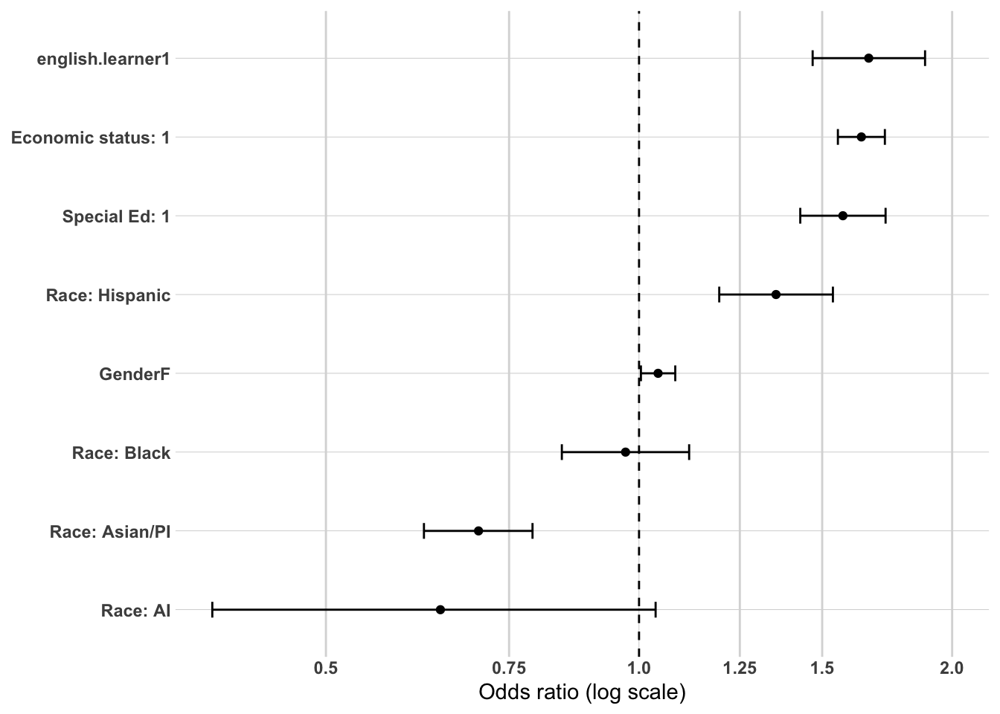
Model 2 - High School Characteristics and Local Labor Market
Adding high school characteristics produces a meaningful improvement in model fit relative to the ps.grad Block 2 (Nagelkerke R²=0.026, ΔAIC=-35). Place-based factors have more bearing on where completers graduate than on whether they complete at all, consistent with the bivariate finding that graduation location is more sensitive to geographic context than credential completion.
All demographic coefficients from Block 1 remain essentially unchanged in direction, magnitude, and significance, confirming that high school characteristics do not confound the demographic associations identified in Block 1.
EDR shows a significant negative association for EDR 10 graduates (OR=0.878, 95% CI 0.843-0.916, p<0.001). Among credential completers, EDR 10 graduates have approximately 12% lower odds of completing regionally than EDR 9 graduates net of demographic characteristics and local unemployment rates. This is the clearest geographic sorting signal in the ps.grad.location model — EDR 10 completers are more likely to pursue and complete credentials outside the region, consistent with the bivariate finding that EDR 10 showed substantially higher out-of-state graduation rates (32.7% vs. 24.4% for EDR 9). This EDR difference in graduation location is the mechanism behind the EDR workforce outcome divergence identified in Stage 3 — EDR 9 completers earn credentials closer to home and subsequently show stronger in-state employment, while EDR 10 completers are more likely to complete outside Minnesota and leave the state entirely.
Average local unemployment rate shows a small but significant negative association with regional graduation (OR=0.986, 95% CI 0.972-1.000, p=0.048). Higher local unemployment is modestly associated with lower odds of regional credential completion among completers, consistent with graduates from weaker labor markets being more likely to pursue credentials at more distant institutions as part of a broader geographic mobility strategy. The effect is small in practical terms but directionally consistent with the bivariate finding.
Hosmer and Lemeshow goodness of fit (GOF) test
data: model_ps_grad_location_2$y, fitted(model_ps_grad_location_2)
X-squared = 51.528, df = 8, p-value = 2.076e-08
or_plot <-tidy(model_ps_grad_location_2, conf.int =TRUE, exponentiate =TRUE) %>%filter(term !="(Intercept)") %>%mutate(# Make labels nicer (edit these replacements to match your exact factor labels)term =str_replace_all(term, c("RaceEthnicity"="Race: ","economic.status"="Economic status: ","SpecialEdStatus"="Special Ed: ","pseo.participant"="PSEO: ","cte.achievement"="CTE: ","MCA.M"="MCA Math","highest.cred.level"="Highest credential" )),# Put most important effects near the top (optional: tweak ordering later)term =fct_reorder(term, estimate) )ggplot(or_plot, aes(x = estimate, y = term)) +geom_vline(xintercept =1, linetype ="dashed") +geom_vline(xintercept =c(0.5, 0.75, 1.25, 1.5, 2),color ="grey85") +geom_point() +geom_errorbar(aes(xmin = conf.low, xmax = conf.high),orientation ="y",width =0.2 ) +scale_x_log10(breaks =c(0.5, 0.75, 1, 1.25, 1.5, 2),labels =c("0.5", "0.75", "1.0", "1.25", "1.5", "2.0") ) + theme_line +labs(x ="Odds ratio (log scale)",y =NULL )
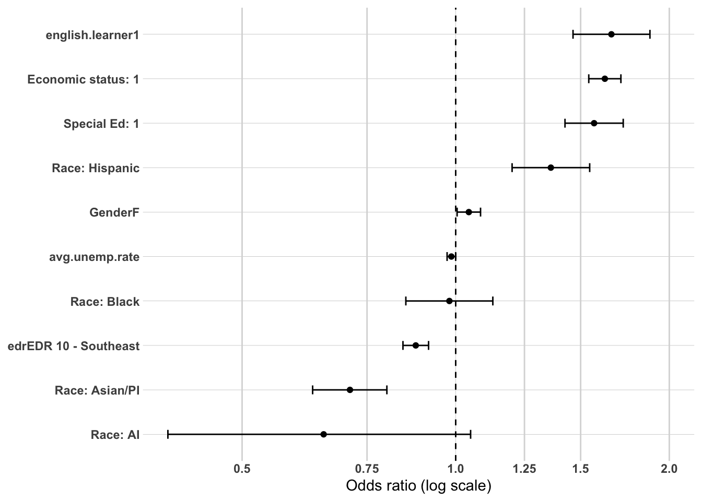
Model 3 - High School Accomplishments
Adding high school accomplishments produces a meaningful improvement in model fit (Nagelkerke R²=0.077, ΔAIC=-1,794). While this is the largest improvement across the three blocks for this model, it is substantially smaller than the comparable block improvements in the ps.grad and highest.cred.level models, confirming that graduation location is less strongly driven by high school preparation than credential completion or credential level. Geographic sorting among completers is influenced by preparation but also by factors not captured in the model — institutional access, family proximity, financial constraints, and personal preference.
Special education status becomes non-significant (OR=1.053, p=0.313) once accomplishments are controlled — its Block 1 and 2 positive association with regional graduation is entirely explained by the lower academic achievement of special education completers rather than representing an independent geographic preference. Economic status attenuates but remains strongly positive (OR=1.412, 95% CI 1.338-1.490) — low-income completers retain approximately 41% higher odds of completing regionally even after controlling for academic preparation, confirming that economic access constraints operate independently of academic orientation. English learner status attenuates but remains significant (OR=1.274, 95% CI 1.120-1.451, p<0.001), indicating that geographic and cultural proximity to regional institutions is an independent factor in postsecondary location choice for english learner graduates beyond what academic preparation captures. EDR 10 retains a significant negative association (OR=0.924, 95% CI 0.885-0.964, p<0.001), confirming that EDR 10 graduates are less likely to complete regionally even after controlling for academic preparation and CTE engagement. Average local unemployment rate strengthens to a more meaningful negative association (OR=0.945, 95% CI 0.931-0.958, p<0.001) — each unit increase in local unemployment is associated with approximately 5.5% lower odds of regional graduation among completers with equivalent preparation, consistent with graduates from weaker local labor markets pursuing credentials at more geographically distant institutions.
AP exam participation is the dominant predictor of non-regional graduation (OR=0.544, 95% CI 0.520-0.568). Among completers with equivalent demographics, EDR, and other accomplishment variables, AP exam takers have approximately 46% lower odds of completing regionally. This is the strongest accomplishment variable association in the ps.grad.location model and confirms that advanced academic coursework is the clearest high school signal of geographic departure from the region at the credential completion stage.
CTE achievement shows significant positive associations with regional graduation — concentrators and completors (OR=1.342, 95% CI 1.279-1.409) and participants (OR=1.321, 95% CI 1.258-1.387) both show approximately 32-34% higher odds of completing regionally than No CTE graduates net of all other variables including academic achievement. Notably the two CTE categories are not significantly different from each other, suggesting that any CTE engagement — not just concentration — predicts regional credential completion among those who complete. This is an important confirmatory finding: CTE engagement predicts regional graduation location independently of credential level, academic achievement, and demographic characteristics.
ACT participation shows a significant negative association (OR=0.797, 95% CI 0.751-0.846), consistent with the college orientation pathway leading away from regional completion. MCA Reading score shows a significant negative association (OR=0.813, 95% CI 0.788-0.838) — each standard deviation increase in reading score is associated with approximately 19% lower odds of regional graduation among completers, confirming that academic achievement predicts geographic departure at the credential completion stage.
Gender retains a small positive association for females (OR=1.126, 95% CI 1.083-1.171) that is larger and more significant than in earlier blocks, suggesting that among completers with equivalent academic preparation, females are modestly more likely to complete regionally than males — a finding without a clear bivariate precedent that warrants cautious interpretation. Hispanic graduates retain a significant positive association (OR=1.421, 95% CI 1.250-1.616) and Asian/PI graduates retain a significant negative association (OR=0.861, 95% CI 0.760-0.974) after controlling for accomplishments, confirming that racial and ethnic differences in graduation location are not fully explained by differential academic preparation or CTE engagement.
Hosmer and Lemeshow goodness of fit (GOF) test
data: model_ps_grad_location_3$y, fitted(model_ps_grad_location_3)
X-squared = 21.836, df = 8, p-value = 0.005229
or_plot <-tidy(model_ps_grad_location_3, conf.int =TRUE, exponentiate =TRUE) %>%filter(term !="(Intercept)") %>%mutate(# Make labels nicer (edit these replacements to match your exact factor labels)term =str_replace_all(term, c("RaceEthnicity"="Race: ","economic.status"="Economic status: ","SpecialEdStatus"="Special Ed: ","pseo.participant"="PSEO: ","cte.achievement"="CTE: ","MCA.M"="MCA Math","highest.cred.level"="Highest credential" )),# Put most important effects near the top (optional: tweak ordering later)term =fct_reorder(term, estimate) )ggplot(or_plot, aes(x = estimate, y = term)) +geom_vline(xintercept =1, linetype ="dashed") +geom_vline(xintercept =c(0.5, 0.75, 1.25, 1.5, 2),color ="grey85") +geom_point() +geom_errorbar(aes(xmin = conf.low, xmax = conf.high),orientation ="y",width =0.2 ) +scale_x_log10(breaks =c(0.5, 0.75, 1, 1.25, 1.5, 2),labels =c("0.5", "0.75", "1.0", "1.25", "1.5", "2.0") ) + theme_line +labs(x ="Odds ratio (log scale)",y =NULL )
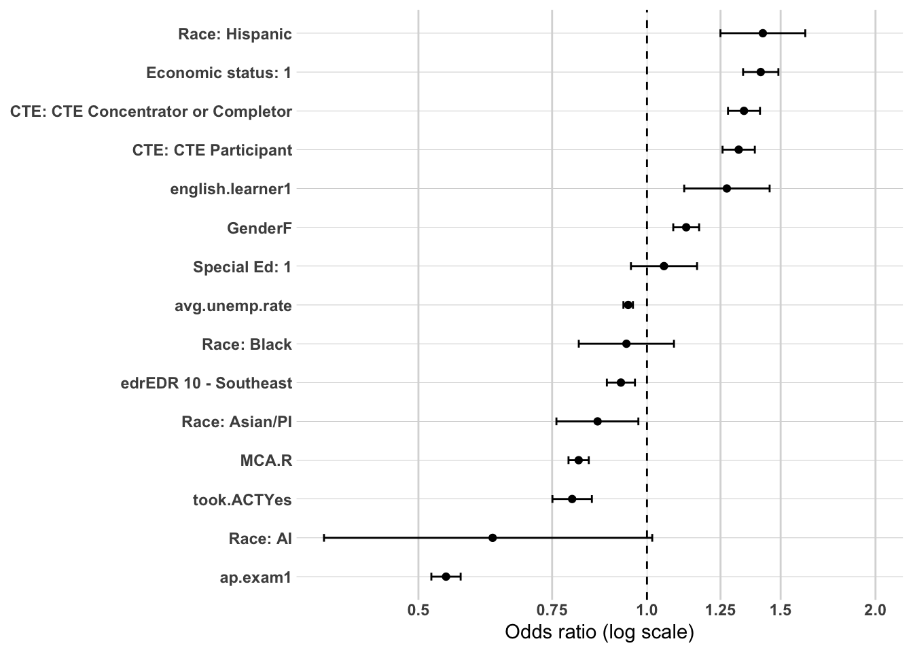
Summary of Multivariate Confirmation Analysis
OVERVIEW
The hierarchical logistic regression analysis was conducted on 46,243 Southeast Minnesota high school graduates who completed a postsecondary credential, with the outcome coded as 1 = graduated from a regional institution and 0 = graduated from an institution outside the region. The model was built in three blocks — demographics, high school characteristics, and high school accomplishments — to examine whether bivariate associations with graduation location remain directionally consistent when key variables are considered simultaneously. Because this analysis is restricted to credential completers, findings reflect a selected population and should be interpreted accordingly.
MODEL FIT PROGRESSION
Block 1 (Demographics alone) explained very little variance in graduation location (Nagelkerke R²=0.025, AIC=61,477) — the lowest Block 1 R² of any model in the analysis. Demographic characteristics are weak predictors of where completers graduate, consistent with the bivariate finding that graduation location is more strongly driven by high school preparation and geographic context than by background characteristics. Block 2 (adding high school characteristics) produced a meaningful improvement relative to the ps.grad Block 2 (ΔAIC=-35), driven by EDR — confirming that geographic context shapes graduation location more than credential completion. Block 3 (adding high school accomplishments) produced the largest improvement (Nagelkerke R²=0.077, ΔAIC=-1,794), though substantially smaller than the comparable block improvements in the ps.grad and highest.cred.level models. High school preparation influences graduation location but explains less variance here than in the other postsecondary outcomes — geographic sorting among completers is also shaped by institutional access, financial constraints, and personal factors not captured in the model.
WHAT THE MODEL TELLS US
The graduation location model tells a story about geographic sorting among completers — what determines whether a graduate completes a credential near home or departs for more distant institutions. The story has two distinct components: an access constraint mechanism that concentrates disadvantaged completers regionally regardless of academic preparation, and an academic orientation mechanism that drives academically prepared graduates away from the region. CTE engagement operates as a third independent mechanism that predicts regional completion even after both access constraints and academic achievement are controlled.
The access constraint mechanism is most clearly expressed through economic status, which retains the largest and most stable positive association with regional graduation across all three blocks (OR=1.412 at Block 3). Low-income completers have approximately 41% higher odds of completing regionally than non-low-income completers net of academic preparation and all other variables. This is not a preference for regional institutions — it is a structural channeling effect driven by the financial barriers that prevent low-income graduates from pursuing credentials at more distant or out-of-state institutions. English learner status shows a persistent positive association (OR=1.274 at Block 3) consistent with geographic and cultural proximity to regional institutions operating as an independent factor in postsecondary location choice. Special education status, by contrast, becomes non-significant once academic preparation is controlled — its Block 1 regional concentration effect is explained by lower academic achievement among special education completers rather than an independent geographic preference.
The academic orientation mechanism drives graduates away from regional completion. AP exam participation is the dominant predictor of non-regional graduation (OR=0.544) — the strongest single accomplishment variable association in the model. ACT participation (OR=0.797) and MCA Reading score (OR=0.813 per standard deviation) add independent negative associations, confirming that academic preparation and orientation in high school consistently predict geographic departure from the region at the credential completion stage. These associations operate net of credential level — academic achievement predicts non-regional graduation regardless of whether the graduate is pursuing a sub-baccalaureate or baccalaureate credential.
CTE engagement is the critical counterweight to academic orientation in this model. CTE concentrators and participants both show approximately 32-34% higher odds of completing regionally than No CTE graduates (OR=1.342 and OR=1.321 respectively), net of academic achievement, economic status, EDR, and all other variables. The similarity in magnitude between concentrators and participants — unlike the clear dose-response gradient seen in the workforce outcome model — suggests that any sustained CTE engagement predicts regional credential completion, not just the most intensive level. This is an important finding: CTE engagement predicts where completers graduate independently of what level of credential they pursue, confirming that the CTE-to-regional-employment chain operates through geographic proximity in credential completion as well as through sub-baccalaureate credential attainment.
EDR retains a significant negative association for EDR 10 graduates throughout all three blocks (OR=0.924 at Block 3), confirming that EDR 10 completers are less likely to graduate regionally even after controlling for demographics, academic preparation, and CTE engagement. This persistent EDR difference in graduation location — independent of all measured characteristics — likely reflects unmeasured institutional, cultural, or geographic factors that make EDR 10 graduates more geographically mobile at the credential completion stage. Combined with the highest.cred.level finding that EDR 10 completers are more likely to reach the baccalaureate level, the picture for EDR 10 is of a completer population that is more academically credentialed and more geographically mobile — and subsequently more likely to establish careers outside Minnesota as documented in Stage 3.
THE TWO FINDINGS THAT MATTER MOST
First, CTE engagement predicts regional credential completion independently of academic achievement and access constraints. This is the most important finding in the graduation location model because it confirms that CTE engagement operates as an active geographic sorting mechanism — not simply a proxy for lower academic achievement or economic disadvantage. Graduates who engage with CTE are more likely to complete credentials regionally regardless of their academic preparation level, and this geographic proximity at the credential stage translates directly into regional workforce attachment at Years 5 and 10.
Second, economic access constraints and academic orientation pull in opposite directions and together explain most of the geographic sorting among completers. Economic disadvantage channels graduates toward regional institutions through financial constraints, while academic orientation channels them away through higher aspirations and greater institutional access. The graduates most likely to complete regionally are those with both CTE engagement and economic constraints — the profile most associated with the sub-baccalaureate regional pathway identified throughout the analysis. The graduates least likely to complete regionally are those with high academic achievement, AP exam participation, and no CTE engagement — the profile most associated with the bachelor or higher outside MN pathway and subsequent departure from Minnesota’s formal labor market.
LIMITATIONS
The analysis is restricted to credential completers, introducing selection effects that limit generalizability to the full graduate population. The Hosmer-Lemeshow test indicates some lack of fit at Block 3 (p=0.005), suggesting the model does not fully capture the complexity of graduation location patterns — consistent with geographic sorting being influenced by unmeasured factors including institutional availability, family proximity, and personal preference. All associations are descriptive rather than causal.
The postsecondary outcome analysis examined four sequential decision points in the postsecondary pathway using hierarchical logistic regression: credential completion (ps.grad, full population), credential level (highest.cred.level, completers only), graduation location (ps.grad.location, completers only), and the combined pathway variable examined in the bivariate stage. Across all four models, two sorting mechanisms operate consistently and in opposing directions. Academic orientation — measured by ACT participation, AP exam taking, and MCA Reading scores — predicts credential completion, baccalaureate attainment, and non-regional graduation. CTE engagement predicts sub-baccalaureate attainment and regional graduation. These mechanisms are not simply mirror images of each other — they operate through different pathways, at different stages, and with different magnitudes. Together they produce the postsecondary pathway structure that determines long-run workforce outcomes in Southeast Minnesota.
THE THREE SEQUENTIAL SORTING DECISIONS
The first sorting decision is whether a graduate completes any postsecondary credential at all. This is the decision most strongly shaped by structural disadvantage — economic status and special education status show the largest independent negative associations of any model in the analysis (OR=0.454 and OR=0.480 respectively at Block 3), and racial and ethnic disparities persist after controlling for academic preparation. Academic orientation variables are the strongest positive predictors — ACT participation more than triples the odds of completion (OR=3.242) and AP exam participation more than doubles them (OR=2.212). CTE engagement shows modest negative associations with completion (concentrators OR=0.826, participants OR=0.888), reflecting a deliberate orientation toward workforce entry rather than postsecondary failure. The female completion advantage is large and stable (OR=1.537), confirming that gender differences in credential attainment are not explained by academic preparation differences. Place-based factors are essentially irrelevant to completion — neither EDR nor local unemployment rate shows meaningful independent associations once demographics are controlled.
The second sorting decision — occurring only among the 46% who complete credentials — is whether the graduate reaches the baccalaureate level or stops at sub-baccalaureate. This is where the academic orientation versus CTE engagement divide is sharpest. ACT participation produces the largest single odds ratio in the entire analysis (OR=4.383) — among completers, ACT takers have more than four times the odds of reaching the baccalaureate level. AP exam participation adds an independent association nearly as large (OR=2.821), and MCA Reading score contributes a strong independent positive association (OR=1.646 per standard deviation). CTE engagement produces the largest negative associations of any model — concentrators have approximately 47% lower odds of reaching the baccalaureate level (OR=0.529) and participants have approximately 28% lower odds (OR=0.724), net of academic achievement and all other variables. Economic status and special education status retain large negative associations even among completers (OR=0.559 and OR=0.578), confirming that financial and institutional barriers constrain access to four-year credentials independently of academic preparation. EDR 10 shows a significant positive association with baccalaureate attainment (OR=1.121) — the only model where EDR shows a meaningful independent effect — with EDR 10 completers more likely to pursue four-year credentials than EDR 9 completers with equivalent preparation.
The third sorting decision — also occurring only among completers — is whether the graduate completes credentials in the region or elsewhere. This is the decision most directly linked to long-run workforce outcomes and the one with the most complex causal structure. Two mechanisms pull in opposite directions. The access constraint mechanism concentrates disadvantaged completers regionally — economic status retains a large positive association with regional graduation across all three blocks (OR=1.412 at Block 3), and english learner status retains a significant positive association (OR=1.274), both operating through financial and geographic proximity constraints that are independent of academic preparation. The academic orientation mechanism drives prepared graduates away from regional completion — AP exam participation is the strongest predictor of non-regional graduation (OR=0.544), with ACT participation (OR=0.797) and MCA Reading score (OR=0.813) adding independent negative associations. CTE engagement — concentrators (OR=1.342) and participants (OR=1.321) — predicts regional graduation independently of both access constraints and academic achievement, confirming that CTE engagement is an active geographic sorting mechanism rather than simply a proxy for lower academic preparation or economic disadvantage. EDR 10 retains a significant negative association with regional graduation across all blocks (OR=0.924 at Block 3), identifying a persistent geographic mobility tendency among EDR 10 completers that is not explained by any measured characteristic.
THE CHAIN FROM HIGH SCHOOL TO WORKFORCE
The postsecondary outcome models collectively establish the full chain linking high school experiences to long-run workforce outcomes. The chain operates through two distinct routes.
The academic orientation route runs from high ACT participation, AP exam taking, and MCA scores through credential completion, baccalaureate attainment, and non-regional graduation to out-of-region or out-of-state employment. Each step in this chain is confirmed by a separate multivariate model — academic orientation predicts completion, baccalaureate attainment, and non-regional graduation independently and consistently. Graduates who follow this route are most likely to appear in the no-MN-record group at Year 10, reflecting successful out-of-state career establishment following out-of-state credential completion.
The CTE engagement route runs from CTE course-taking and concentration through sub-baccalaureate credential completion, regional graduation, and sustained regional employment. Again each step is confirmed by a separate multivariate model — CTE engagement negatively predicts credential completion, negatively predicts baccalaureate attainment among completers, positively predicts regional graduation among completers, and positively predicts regional employment at Year 5 in the workforce outcome model. The CTE effect operates at every stage of the pathway and is independent of academic achievement at each step.
Structural disadvantage intersects with both routes but concentrates graduates in specific segments. Economic disadvantage and special education status reduce credential completion, reduce baccalaureate attainment among completers, and increase regional graduation among completers — channeling disadvantaged graduates who do complete into sub-baccalaureate regional pathways. This channeling is not a deliberate choice but a structural constraint that produces regional workforce outcomes as a byproduct of limited geographic and financial mobility. The racial and ethnic disparities that persist across all models — particularly for American Indian, Hispanic, and Black graduates — reflect structural barriers that operate at multiple stages of the pathway and are not fully explained by academic preparation, CTE engagement, or economic status.
WHAT MAKES SOUTHEAST MINNESOTA DISTINCTIVE
Several findings emerge from the postsecondary outcome analysis that are specific to the Southeast Minnesota context and worth highlighting in the narrative synthesis.
EDR differences within the region are more consequential than the bivariate analysis suggested. EDR 10 completers are more likely to reach the baccalaureate level and less likely to complete regionally than EDR 9 completers with equivalent preparation — a combination that produces the higher out-of-state graduation rates and subsequent workforce departure documented in Stage 3. This persistent EDR difference across multiple models points to unmeasured institutional, cultural, or geographic factors within Southeast Minnesota that differentiate the two EDRs beyond what high school preparation can explain.
The english learner finding at the ps.grad and ps.grad.location stages is analytically interesting and potentially distinctive. English learner graduates who complete credentials show a positive orientation toward credential completion once academic achievement is controlled, and they complete regionally at higher rates. This pattern — higher completion orientation combined with geographic concentration near regional institutions — suggests that english learner completers in Southeast Minnesota are following a specific sub-baccalaureate regional pathway that connects to regional workforce attachment.
Average local unemployment rate shows a consistent and theoretically coherent pattern across models. Higher unemployment reduces regional graduation location and regional employment but increases credential completion and baccalaureate attainment among completers. Taken together these associations are consistent with a labor market substitution mechanism — graduates from weaker local economies are more motivated to invest fully in postsecondary credentials but more likely to pursue those credentials at distant institutions and subsequently find employment outside the region. This mechanism operates independently of individual preparation and demographic characteristics and represents a structural feature of Southeast Minnesota’s local labor market geography.
THE STORY THE DATA TELLS Southeast Minnesota (EDR 9 and EDR 10)
INTRODUCTION
Across more than a decade of longitudinal records for Southeast Minnesota high school graduates, a coherent and internally consistent story emerges about how young people transition from high school into adult economic life. The story is not simply about who succeeds and who struggles — it is about the distinct routes through which graduates connect to economic opportunity, and how the choices and circumstances of high school shape which route each graduate follows. Three routes emerge from the data with clarity and consistency across every analytical stage: the college completer pathway, the workforce-first pathway, and the disconnected pathway. Each is defined not by a single variable but by a constellation of characteristics that become visible as early as high school and persist through the decade of observation.
THE WORKFORCE-FIRST PATHWAY
The most distinctively regional story the data tells is about graduates who enter the labor market directly from high school and build sustained employment in Southeast Minnesota without completing a postsecondary credential. This pathway is not defined by academic failure or economic deprivation — it is defined by deliberate vocational preparation. CTE engagement is the single most stable and powerful predictor of regional workforce attachment in the entire analysis, and it retains this association through every analytical stage.
In high school, these graduates take more CTE courses, concentrate in CTE programs, and are less likely to take the ACT or AP exams. They are more likely to be male, more likely to come from low-income households, and more likely to have special education status — but these demographic characteristics do not define the pathway. CTE engagement predicts regional employment independently of demographics, local labor market conditions, and even postsecondary credential attainment. In the final workforce outcome model, CTE concentrators retain 54% higher odds of sustained regional employment at Year 5 (OR=1.543) and participants retain 34% higher odds (OR=1.344) net of all other variables including postsecondary pathway.
Among those who do complete postsecondary credentials, CTE engagement channels graduates toward sub-baccalaureate credentials at regional institutions — the credential pathway most strongly associated with regional employment. Sub-baccalaureate regional completion produces the highest regional employment odds of any postsecondary pathway (OR=2.479 in the workforce outcome model), edging out even four-year regional completion. Whether a CTE-engaged graduate enters the workforce directly or completes a regional credential first, the destination is the same — sustained employment in Southeast Minnesota.
The bivariate analysis establishes that this pathway is durable. The regional employment advantage of CTE concentrators over No CTE graduates is visible at Year 1, maintained at Year 5, and still present at Year 10 — a 12-plus percentage point gap that does not close over the observation window. This is not an artifact of early labor market entry or a transitional advantage that fades as postsecondary graduates catch up. CTE engagement produces a lasting regional workforce attachment that defines the economic trajectory of a substantial share of Southeast Minnesota graduates.
THE COLLEGE COMPLETER PATHWAY
The second major pathway runs through postsecondary credential completion, and within this pathway the critical question is not whether a graduate completes a credential but where and at what level. Graduation location is the hinge variable that determines whether postsecondary completion translates into regional workforce attachment or geographic departure.
In high school, these graduates are characterized by academic orientation — ACT participation, AP exam taking, high MCA scores, and PSEO participation. They are more likely to be female, more likely to come from non-low-income households, and more likely to be White or Asian/PI. Academic orientation predicts credential completion (ACT participation triples the odds at OR=3.242), baccalaureate attainment among completers (ACT participation produces OR=4.383 — the largest single odds ratio in the analysis), and non-regional graduation among completers (AP exam participation produces OR=0.544 for regional graduation). The chain from academic preparation through credential level to graduation location is confirmed at every step by independent multivariate models.
Among college completers, the pathway bifurcates sharply by graduation location. Graduates who complete credentials in the region — whether sub-baccalaureate or baccalaureate — show substantially elevated odds of regional employment (OR=2.479 and OR=2.168 respectively). These graduates are disproportionately low-income, special education, english learner, Hispanic, and Black — populations for whom geographic and financial constraints concentrate credential completion at nearby regional institutions. For these graduates, access constraints produce regional workforce attachment as a structural byproduct of limited geographic mobility rather than as a deliberate regional orientation.
Graduates who complete credentials outside the region — particularly outside Minnesota — follow a fundamentally different trajectory. Outside-MN graduation produces a 54.2% no-MN-record rate at Year 10, the highest of any postsecondary pathway category and consistent with successful out-of-state career establishment rather than disconnection. These graduates are disproportionately non-low-income, White and Asian/PI, AP exam takers, and EDR 10 residents. For them, postsecondary completion represents a pathway out of Southeast Minnesota rather than a route to regional workforce attachment. Their departure from Minnesota’s formal employment records is not a failure — it is the expected outcome of a geographic trajectory that begins with academic preparation in high school and culminates in out-of-state credential completion and career establishment.
Within the college completer pathway, EDR matters in ways that were not apparent in the bivariate analysis. EDR 10 completers are more likely to reach the baccalaureate level and less likely to complete regionally than EDR 9 completers with equivalent preparation — a combination that produces higher out-of-state graduation rates and subsequent workforce departure. EDR 9 completers, by contrast, are more concentrated in sub-baccalaureate and in-state pathways that produce stronger meaningful MN employment rates at Years 5 and 10. The two EDRs are not dramatically different in who completes credentials or at what level in aggregate, but they diverge meaningfully in the geographic destination of credential completion — and that divergence has lasting consequences for where graduates end up in the labor market.
THE DISCONNECTED PATHWAY
The third pathway is defined by the absence of both mechanisms — neither CTE engagement nor postsecondary credential completion — and it produces two distinct signatures that require differentiated interpretation.
The local underutilization signature is characterized by presence in Minnesota’s labor market but below the sustained employment threshold. Graduates who exhibit this signature at Year 5 and Year 10 are disproportionately economically disadvantaged, special education, and No CTE — graduates who neither developed vocational skills for direct regional employment nor completed postsecondary credentials. They are present in the labor market but unable to sustain the hours and employer attachment that define meaningful employment in this analysis. This signature persists across the observation window — non-meaningful employment at Year 10 remains elevated for these populations — indicating a durable labor market foothold that falls short of economic security.
The geographic absence signature is characterized by no Minnesota employment record and no postsecondary attendance. This signature is analytically complex because it encompasses two fundamentally different populations. Among high academic achievers — particularly those with AP exam participation and high MCA scores — geographic absence at Year 10 reflects successful out-of-state career establishment following out-of-state credential completion. This is the college completer pathway’s geographic departure operating as intended. Among No CTE, low academic achievement graduates, geographic absence is more likely to reflect genuine disconnection — neither establishing a regional labor market foothold nor completing credentials that would facilitate employment elsewhere. The no-MN-record group at Year 10 is heterogeneous, and the bivariate analysis establishes that its composition differs systematically across independent variables in ways that distinguish the two underlying populations.
The demographic variables that remain significant throughout the workforce outcome model — Black race (OR=0.486), American Indian race (OR=0.536), Asian/PI race (OR=0.722), economic disadvantage (OR=0.923), special education status (OR=0.748), and english learner status (OR=0.870) — all show persistent negative associations with regional employment that are not explained by high school preparation or postsecondary pathway. These represent structural barriers that operate independently of the pathway mechanisms and are most concentrated among graduates in the disconnected pathway. Closing the regional employment gap for these populations requires addressing barriers that CTE engagement and credential completion alone cannot overcome.
WHAT THE DATA CANNOT TELL US
The analysis consistently identifies associations rather than causes. CTE engagement is associated with regional workforce attachment, but the data do not establish whether CTE causes this attachment or whether graduates who were always oriented toward regional employment self-select into CTE. Similarly, academic achievement is associated with geographic departure, but the data do not establish whether high-achieving graduates leave because of their credentials or whether they were always planning to leave and academic achievement facilitated that plan. The three pathways are descriptive constructs that organize the data — they are not deterministic categories that predict individual outcomes.
The MCA.R subsetting required for the multivariate models introduces selection effects that limit generalizability. The workforce outcome model is estimated on graduates with non-missing MCA scores, who are systematically different from the full population in ways that could affect coefficient estimates. The postsecondary models are estimated on completers only, introducing a second layer of selection. These limitations are acknowledged throughout the analysis and do not undermine the directional consistency of the findings across bivariate and multivariate stages, but they warrant appropriate caution in extrapolating to the full graduate population.
THE CENTRAL CONCLUSION
Southeast Minnesota produces graduates who follow three distinct economic trajectories from high school. The trajectory a graduate follows is not random — it is shaped by measurable characteristics of high school engagement that are visible years before the graduate enters the labor market. CTE engagement is the most reliable predictor of regional workforce attachment, operating through both direct workforce entry and through the sub-baccalaureate regional credential pathway. Academic orientation is the most reliable predictor of postsecondary completion and geographic departure, with graduation location as the critical hinge that determines whether that departure is temporary or permanent. Structural disadvantage concentrates graduates in specific segments of all three pathways through mechanisms that operate independently of preparation and represent the most important equity consideration for policy and practice.
The data do not suggest that any one pathway is superior to the others as an economic outcome. Regional employment, out-of-region employment, and even geographic mobility outside Minnesota all represent successful economic integration for different graduates following different trajectories. The policy question the data raise is not how to maximize any single outcome but how to ensure that every graduate has access to the preparation and support needed to follow their chosen pathway successfully — and how to reduce the structural barriers that prevent economically disadvantaged, special education, and racial and ethnic minority graduates from achieving the outcomes their preparation and orientation would predict.